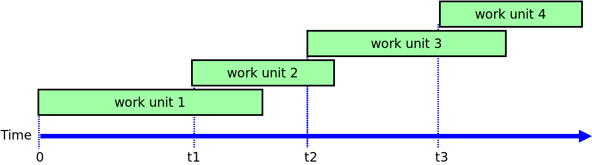
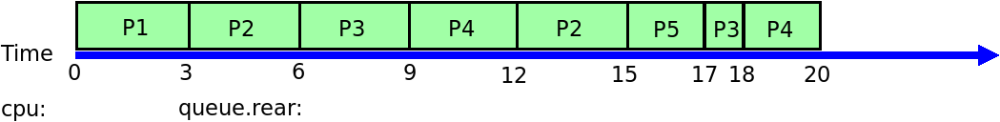
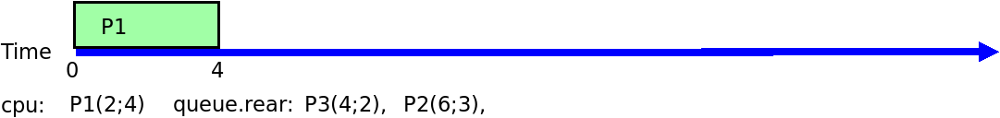
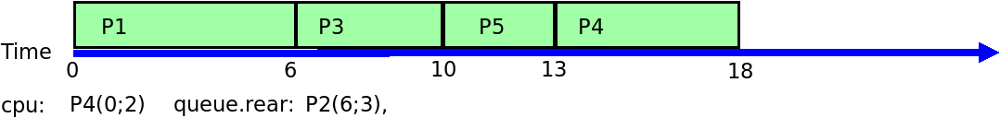
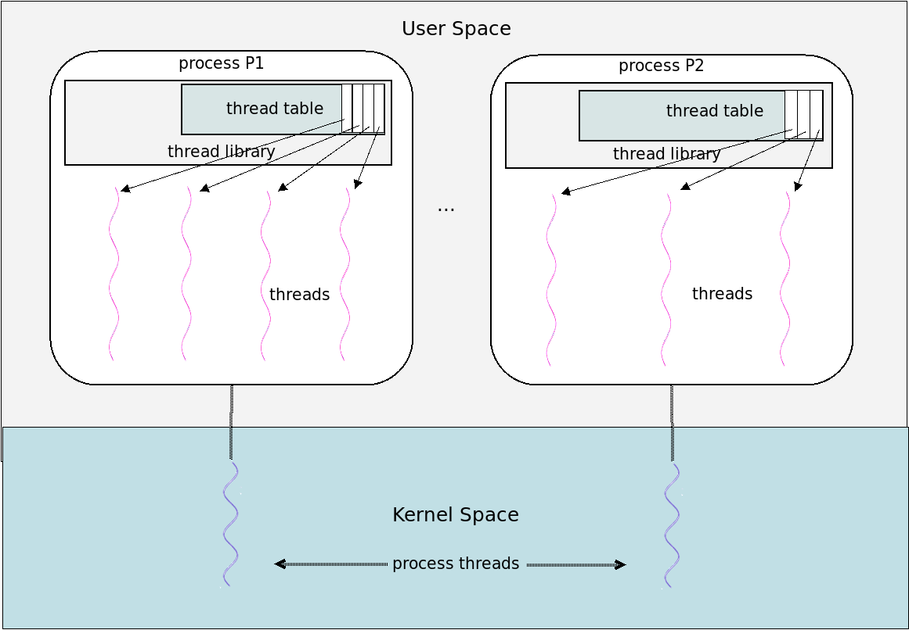
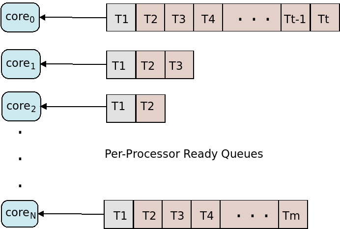

class: center, middle, title-slide ## CSCI 340 Operating Systems <br> ## Chapter 5: CPU Scheduling .author[ Stewart Weiss<br> ] .license[ Copyright 2020 Stewart Weiss. Unless noted otherwise all content is released under a [Creative Commons Attribution-ShareAlike 4.0 International License](https://creativecommons.org/licenses/by-sa/4.0/). Background image: roof of the EPIC Museum, Dublin, by Stewart Weiss. ] --- name: cc-notice template: default layout: true .bottom-left[© Stewart Weiss. CC-BY-SA.] --- name: tinted-slide template: cc-notice layout: true class: tinted --- name:toc ### Table of Contents [Prologue: About Scheduling](#prologue-1)<br> [Prologue: About CPU Schedulers](#schedulers)<br> [Prologue: Processes and Threads](#terminology)<br> [About This Chapter](#about-chapter)<br> [Chapter Objectives](#objectives)<br> [CPU Scheduling Overview](#concepts)<br> [Model of Process Execution](#burst-cycle)<br> [The CPU-I/O Burst Cycle](#cpu-burst-cycle)<br> [CPU-Bound and I/O-Bound Processes](#process-mixes)<br> [CPU Burst Lengths](#process-mix)<br> [CPU Scheduler Queues](#cpu-scheduler-queues)<br> [Scheduling Decision Modes](#scheduling-decision-mode)<br> [Non-Preemptive Scheduling](#nonpreemptive-scheduling)<br> [Preemptive Scheduling](#preemptive-scheduling)<br> [Preemption and the Kernel](#preemptive-kernel)<br> [Kernel Preemption Example](#preemption-example)<br> [Preemptive Kernels](#preemptive-kernels)<br> [Context Switching](#context-switching)<br> [The Dispatcher](#dispatcher)<br> [CPU Scheduling Criteria](#scheduling-objectives)<br> [Other CPU Scheduling Criteria](#scheduling-objectives-2)<br> --- ### Table of Contents [Optimization](#optimization)<br> [A Model for Evaluating Scheduling Algorithms](#evaluation-model)<br> [Gantt Charts](#gantt-chart-example)<br> [First-Come-First-Served (FCFS) Scheduling](#fcfs-1)<br> [FCFS Example](#fcfs-example)<br> [FCFS Simulation](#fcfs-1)<br> [FCFS and Order of Arrivals](#fcfs-example-2)<br> [FCFS and Order of Arrivals](#fcfs-example-2-analysis)<br> [FCFS and Order of Arrivals](#fcfs-example-2-analysis-2)<br> [The Convoy Effect](#convoy-effect)<br> [Shortest Job First (SJF) Scheduling](#sjf-intro)<br> [Shortest Job First Example](#sjf-example)<br> [SJF Simulation](#sjf-1)<br> [Shortest Job First Performance](#sjf-prediction)<br> [Implementing Shortest Job First](#sjf-implementation)<br> [Exponential Averaging](#exponential-average)<br> [Exponential Averaging In General](#exponential-average-2)<br> [Shortest Remaining Time First Scheduling](#shortest-remaining-time-first)<br> [SRTF Example](#srtf-example)<br> [SRTF Simulation](#srtf-simulation-0)<br> [SRTF Simulation Analysis](#srtf-simulation-9)<br> [Round Robin (RR) Scheduling](#round-robin-intro)<br> [Round Robin Example](#rr-example)<br> --- ### Table of Contents [RR Simulation Analysis, Q = 3](#rr-simulation-9)<br> [Summary Table](#rr-summary)<br> [RR Example With Small Quantum](#rr-quantum1)<br> [Summary Table](#rr-summary)<br> [Round Robin: Burst Length Smaller than Quantum](#round-robin-issues)<br> [Round Robin: Burst Length Greater than Quantum](#round-robin-issues-2)<br> [Round Robin Observations](#rr-observation)<br> [Round Robin's Bias](#rr-design)<br> [The Quantum Length](#rr-quantum-length)<br> [The Effect of Context Switches](#rr-quantum-length)<br> [Priority Scheduling](#priority-scheduling)<br> [Priority Scheduling and Preemption](#priority-scheduling-types)<br> [Priority Scheduling Example](#ps-example)<br> [Nonpreemptive Priority Scheduling Analysis](#ps-simulation-summary)<br> [Preemptive Priority Scheduling](#ps-preemptive)<br> [Preemptive Priority Scheduling Example](#ps-preemptive-example)<br> [Priority Scheduling with Round Robin](#ps-rr-intro)<br> [Priority-RR Example](#ps-rr-intro)<br> [Multilevel Queue Scheduling](#multilevel-queues)<br> [Process Scheduling Classes](#multilevel-queue-classes)<br> [Process Migration](#process-migration)<br> [Multilevel Feedback Queue (MLFQ)](#multilevel-feedback-queues-2)<br> [MLFQ Downward Migration Example](#mlfq-example)<br> --- ### Table of Contents [Scheduling Contention Scope](#thread-scheduling-intro)<br> [System Contention Scope (SCS)](#system-contention-scope)<br> [Process Contention Scope (PCS)](#process-contention-scope)<br> [A Visual Comparison](#contention-scope-comparison)<br> [A Pthreads Example](#pthreads-example)<br> [Pthreads Example Code](#pthreads-contention-example)<br> [Multiprocessor Scheduling Issues](#multiprocessor-scheduling)<br> [Logical Versus Physical Processors](#logical-processors)<br> [Logical Processor Examples](#logical-processor-examples)<br> [Multiprocessors Revisited](#multiprocessor-scheduling-context)<br> [Asymmetric Multiprocessing System Scheduling](#asymmetric-multiprocessing)<br> [Symmetric Multiprocessor Scheduling](#symmetric-multiprocessors)<br> [A Shared Ready Queue Solution](#shared-queue)<br> [Per-Processor Ready Queues](#private-queues)<br> [Per-Processor Ready Queues](#private-queue-trade-offs)<br> [Load Balancing](#load-balancing)<br> [Migration Issues](#migration)<br> [How Does the Scheduler Run?](#scheduler-implementation)<br> [Processor Affinity](#affinity)<br> [NUMA Nodes](#numa-issues)<br> [Hardware Multithreading: Motivation](#multithreading-motivation)<br> [Hardware Multithreading: Introduction](#multithreading-intro)<br> [Hardware Multithreading Visualized](#multithreading-visualized)<br> --- ### Table of Contents [Types of Hardware Multithreading](#multithreading-types)<br> [Hardware Multithreading and Scheduling](#hardware-multithreading-scheduling)<br> [Linux Task Scheduling](#linux-scheduling-1)<br> [Linux Task Scheduling](#linux-scheduling-2)<br> [Completely Fair Scheduler: Concepts](#linux-scheduling-3)<br> [Completely Fair Scheduler: Red Black Tree](#linux-scheduling-4)<br> [Completely Fair Scheduler: Scheduling Classes](#linux-scheduling-5)<br> [Real Time Scheduling](#real-time-scheduling)<br> [References](#references)<br> <!--TOC_END--> --- name: prologue-1 ### Prologue: About Scheduling In Chapter 3 we introduced core concepts of scheduling and in particular we discussed .greenbold[process scheduling] in the context of our study of processes. -- Recall that there are three levels of process scheduling: - .bluebold[Long-term scheduling]: decision about which processes/jobs should be admitted into the system - .bluebold[Medium-term scheduling]: decision about which processes should be memory-resident - .bluebold[Short-term scheduling]: decision about which processes should run on a processor -- .bluebold[CPU scheduling] refers to the short-term scheduling of processes or threads onto the .greenbold[CPU] specifically. --- name: schedulers ### Prologue: About CPU Schedulers A .bluebold[CPU scheduler] is a program that performs scheduling onto the CPU. A .bluebold[CPU scheduling algorithm] is an algorithm used by a CPU scheduler to decide which process or thread should run on an available CPU. -- The objective of scheduling in general, and CPU scheduling in particular, is to .greenbold[improve performance] in one way or another. Performance objectives vary: - .redbold[maximizing utilization] (of the CPU or memory) - .redbold[maximizing throughput] (of processes, threads, or jobs) - .redbold[minimizing response time] (of processes or threads) -- These objectives are often in conflict with each other. CPU schedulers balance these objectives depending on various criteria that operating system designers impose on them. --- name: terminology ### Prologue: Processes and Threads Having to repeatedly write "processes or threads" in these notes about scheduling is laborious and wasteful of the precious slide real estate. Most of the time it does not matter whether the entity being scheduled is a process or a thread. In Linux, the problem is solved by calling processes and threads, tasks. But deviating from standard language might throw the reader off. Therefore, in these slides, we use the word "process" to mean either a process or a thread that can be scheduled onto a processor. When we talk about the particular issues involved in scheduling threads specifically, we will use the term "thread" instead of process. --- name: about-chapter ### About This Chapter This chapter covers CPU scheduling. The general topics that it covers are: - Basic scheduling concepts - CPU scheduling criteria - CPU scheduling algorithms - Thread scheduling - Multiprocessor scheduling - Scheduling in Linux --- name: objectives ### Chapter Objectives You should be able to -- - describe various CPU scheduling algorithms and how they differ; -- - apply CPU scheduling algorithms to systems of processes in various states of execution; -- - assess CPU scheduling algorithms based on various scheduling criteria; -- - explain the additional complexity in scheduling in multiprocessor and multicore computers; -- - explain the particular issues involved in scheduling threads onto cores; -- - describe the scheduling algorithms used in the __Linux__ operating system. --- name: concepts ### CPU Scheduling Overview All modern systems are .greenbold[multiprogramming systems], which, if you recall, means that multiple processes are memory-resident. -- In these systems, to maximize CPU utilization and keep throughput high, the operating system tries to keep the CPU busy doing useful work all of the time. -- When a process running on a processor issues a request to wait for an event such as I/O, to keep that processor busy the operating system wants to replace the process with a memory-resident process that can do useful work. -- The .greenbold[CPU scheduler] is the operating system component that makes the decision about which process to .redbold[schedule onto the processor]. --- name: burst-cycle ### Model of Process Execution A process can execute two types of instructions: - those that cause it to .greenbold[wait for services], such as system calls for I/O or other services, which we call .bluebold[blocking] or .bluebold[wait] instructions, and - those that complete their execution without causing the process to block, which we call .bluebold[compute] instructions (such as .fixedblue[add], .fixedblue[subtract], .fixedblue[load], .fixedblue[store].) -- Therefore, the execution of a process can be modeled as a sequence of compute and wait instructions. Let .red[W] and .green[C] denote wait and compute instructions respectively. Then we can represent any portion of a process's execution by a string of .red[W]'s and .green[C]'s such as the following .green[CCCCCCC].red[W].green[CCCCCCC].red[W].green[CCC].red[W].green[CCC] .red[W].green[CCC].red[W].green[CCCCCCCCCCCCCCCCCCCC].red[W].green[CCCCCCCCCCC]... -- A .bluebold[CPU burst] is the period of time during which the process executes only consecutive compute instructions up to and including the wait, such as .green[CCCCCCCCCCCCCCCCCCCC].red[W] The period of time immediately after a wait instruction until the process is ready to run again is called an .bluebold[I/O burst]. It is called this because most waits of long duration are for I/O. --- name: cpu-burst-cycle ### The CPU-I/O Burst Cycle The preceding discussion shows that a process goes through a sequence of cycles of CPU bursts followed by I/O bursts until it terminates with a CPU burst.super[1]. .footnote[ 1 The instruction that causes it to terminate is not a wait instruction. ] .left-column-large[ When a process executes a blocking instruction, it is unable to do anything while waiting for the I/O to complete. It is a waste of CPU cycles to keep this waiting process on the CPU, so usually it is removed from the CPU. When it is removed from the CPU, the CPU scheduler has to decide with which process to replace it. ] .right-column-small[ <img src="figures/cpu-io-burst.png" width=48% alt="CPU I/O Burst"> ] -- .left-column-large[ .lightgreenbox[ Some processes spend a long time in CPU bursts and make few I/O requests. They are called .bluebold[compute-bound] processes. Others compute very little, and as soon as they get the processor, they issue an I/O request; these are called .bluebold[I/O bound] processes. ] ] --- name: process-mixes ### CPU-Bound and I/O-Bound Processes Processes are called CPU-bound because they need the processor much more than they need the I/O devices. They are "bound" to the CPU. Processes are called I/O-bound because they are issuing I/O requests so frequently that they spend more time waiting for the I/O devices to work for them than they do on the processor. They are "bound" to the I/O system. -- Once a CPU-bound process is given a processor, it uses it for a relatively long time before it issues a blocking instruction. In contrast, an I/O-bound process will very quickly issue a wait. -- Scheduling decisions often look at a process's history of CPU burst lengths to decide whether it is likely to stay on the processor a long time or issue a wait quickly. - If it has a history of just a few long CPU bursts, it is likely to have a long one again. - If it has a history of many short bursts, it is likely to be short again. -- Many schedulers give preference to I/O bound processes, as you will see shortly. --- name: process-mix ### CPU Burst Lengths Because a process that is waiting for I/O is not on the processor, the length of its I/O burst is not a factor in how the scheduler makes any decisions. In contrast, the lengths of CPU bursts can help guide scheduling algorithms. --- name: cpu-scheduler-queues ### CPU Scheduler Queues The CPU scheduler maintains one or more .redbold[queues] of processes that are ready to run. - These queues are called .bluebold[ready queues]. - Ready queues are not necessarily .redbold[First-In-First-Out] (.redbold[FIFO]) queues, though they might be. - They might also be .greenbold[priority queues], .greenbold[trees] or even .greenbold[unordered lists]. -- #### Queue Implementation Queues of processes usually .redbold[do not contain copies] of process control blocks; this would be wasteful of memory and time. -- One alternative is that they contain pointers to the PCBs that are stored in the Process Table. -- Another alternative is that the PCBs themselves contain various members that are PCB pointers that can be used to link them up into various linked lists. The __Linux__ .fixedblue[task_struct] is organized in this latter way. --- name: scheduling-decision-mode ### Scheduling Decision Modes The scheduler runs when it needs to select a process to run on the processor. The .bluebold[scheduling decision mode] specifies the times at which the selection of a process to run is made. This decision can take place at the following times: -- 1. When the running process's state changes from .redbold[running to blocked] because it issued an I/O request or some other .redbold[wait] instruction. -- 2. When the running process's state changes from .redbold[running to ready] because an .redbold[interrupt] such as a timer interrupt occurred. -- 3. When a .redbold[ready queue's contents change] because either a process moved from the blocked state to the ready state as a result of an .redbold[event completion] or because a .redbold[new process was created] and was placed in the queue. -- 4. When the running process terminates. -- .lightgreenbox[ If a scheduling decision is made .redbold[only under conditions 1 and 4], the scheduling is called .bluebold[nonpreemptive scheduling]. If it is made under .redbold[any of the above conditions], it is called .bluebold[preemptive scheduling]. ] --- name: nonpreemptive-scheduling ### Non-Preemptive Scheduling In .bluebold[nonpreemptive scheduling], once a process is given the processor, it holds it until it .redbold[voluntarily relinquishes] it by terminating or by executing a blocking instruction. -- Consider the case of a process .greenbold[computing the first ten billion digits of $\pi$], storing them in an array. - It will not make any blocking system calls (I/O) until it completes its computation and is ready to write out the array. -- - In nonpreemptive scheduling, it will be allowed to hold the processor until it is ready to write out its data. .redbold[No other process can run until this happens]. -- - This causes .redbold[poor response time] for all other processes, which are stuck in the ready queue waiting to run. - This results in .redbold[unpredictable response and turnaround times] for processes in general. -- Why would an operating system use nonpreemptive scheduling? -- .red[Because it easier to implement than preemptive scheduling.] --- name: preemptive-scheduling ### Preemptive Scheduling In .bluebold[preemptive scheduling], a process can be removed from the CPU involuntarily, meaning not as a result of any action it takes. This can happen because of a timer interrupt, or because some other event takes place that causes the scheduler to run. .redbold[Almost all modern operating systems use preemptive scheduling.] -- - It makes it possible to provide .greenbold[good response time] for all processes. - It makes it possible to provide .greenbold[fairness], so that processes get their fair share of time on the processor. -- But preemptive scheduling introduces other problems: -- - Because processes can be removed from the processor whenever a timer interrupt occurs or the ready queue updates, the scheduler can run very frequently. As a result, it must be designed to run very quickly and efficiently. -- - Because processes can be interrupted in the middle of their computations, variables that are shared among processes can become corrupted more easily than in nonpreemptive scheduling. -- - Because a process could get preempted while it is in kernel code, a decision has to be made whether to allow this. --- name: preemptive-kernel ### Preemption and the Kernel Suppose scheduling is preemptive, and that a process makes a system call and the kernel runs on its behalf and gets preempted. -- .red[ Why is this a problem?] -- - During the processing of the system call, the kernel may be changing the contents of a kernel data structure, such as a linked list of open files. -- - When it is preempted, the data structure is left in a semi-updated state. -- - Some other process can run, make a system call, and the kernel will run again, possibly trying to modify the incomplete update of the same data structure. .redbold[The kernel data structure gets corrupted.] -- - With preemptive scheduling, the kernel needs to be designed to prevent this type of data corruption, making it more complex. -- - Kernels can be designed to be .greenbold[preemptive] or .greenbold[nonpreemptive]. - A .bluebold[nonpreemptive kernel] does not allow the scheduler to preempt a process in a system call until it exits kernel mode, blocks, or voluntarily relinquishes control of the CPU. _The kernel code is simpler but less efficient_. - A .bluebold[preemptive kernel] allows preemption but is designed so that no data is corrupted. .redbold[Preemptive kernels are necessary when processes can have real deadlines.] --- name: preemption-example ### Kernel Preemption Example Consider this scenario: 1. Process A causes some exception (makes a system call or executes code that causes the exception.) -- 2. The kernel starts running in kernel mode and enters the exception handler on behalf of process A. -- 3. An interrupt occurs, the interrupt handler awakens a higher priority process B to service the interrupt, moving B from some waiting state to the ready queue. -- .redbold[If the kernel is preemptive], then it will stop executing on A's behalf: the exception handler running for A is stopped, a switch occurs to process B, and when B is finished, the exception handler for A resumes. .redbold[If the kernel is nonpreemptive], it will continue executing on behalf of A until the exception handler finishes, or it voluntarily gives up the CPU. --- name: preemptive-kernels ### Preemptive Kernels A preemptive kernel must be carefully designed to prevent corruption of data. .greenbold[It has to work even if interrupts occur in kernel code and context switches take place], .greenbold[so that multiple processes might be executing kernel code concurrently]. -- - Interrupts happen frequently in operating systems, and can happen when the kernel is executing. -- - The kernel is allowed to be interrupted almost any time because the interrupt might be important and should not be ignored by the kernel. For example, movie players, device drivers, environmental monitors need timely service and cannot be delayed waiting for processes running in kernel mode. -- - The kernel needs to handle these interrupts, otherwise input might be lost or output overwritten. -- - Preemptive kernels use several techniques to make them .redbold[safe to reenter]: - .redbold[disabling interrupts] at entry and re-enabling interrupts at exit of the sections of code in interrupt handlers. - .redbold[making such code sections in interrupt handlers very short], so that the amount of time during which interrupts are disabled is small. - using .greenbold[locks and other synchronization mechanisms] to prevent data corruption. --- name: context-switching ### Context Switching Once the scheduler has chosen a process to run on the CPU, the CPU must be given to that process. In Chapter 3, we explained that this requires what is called a .bluebold[context switch] (see [Context Switch](chapter03.html#context-switch) to review.) -- Although each process has its own address space, .greenbold[all processes share the CPU registers]. Therefore, to remove a process from the CPU and resume another, the kernel must - save the register contents of the process leaving the CPU and - restore the registers with the contents they had when the process to be resumed was removed from the CPU. -- The .bluebold[dispatcher] is the kernel routine that performs the context switch. --- name: dispatcher ### The Dispatcher .lightgreenbox[ The dispatcher is invoked by the CPU scheduler and does the following: - It switches the context from the currently running process to the new one. - It then changes the processor mode to user mode, since it runs in kernel mode. - It loads the instruction register with the location in the new process at which it should start or continue its execution. ] -- The amount of time between when a process is selected to run and when it begins running is called the .bluebold[dispatch latency]. To reduce dispatch latency, the dispatcher must be extremely fast since it is executed so frequently. In __Linux__, the .fixedblue[vmstat ] command displays various system statistics. The command .fixedblue[vmstat 1 3] reports the averages per second since boot, followed by the stats for the past two one-second intervals. The following command pipes .fixedblue[vmstat]'s output into .fixedblue[awk], displaying just the number of context switches for the past .greenbold[three] one-second intervals: ```bash $ vmstat 1 4 | awk 'BEGIN { getline } {gsub("cs","Context Switches",$12); print $12}' Context Switches 7 9175 9168 ``` --- name: cpu-schedulers layout: false class: center, middle, inverse ## CPU Scheduling Algorithms In this section we examine various CPU scheduling algorithms and the criteria by which they can be evaluated. --- template: tinted-slide layout: true --- name: scheduling-objectives ### CPU Scheduling Criteria .bluebold[Scheduling criteria] are the objectives of scheduling algorithms. They can be classified as .greenbold[system-oriented] or .greenbold[user-oriented] or both. The most important criteria are: -- #### System-Oriented: - .redbold[Maximize processor utilization], the fraction of processor time spent executing user processes; - .redbold[Maximize throughput], the number of processes completing per unit time. <hr> -- #### User-Oriented - .redbold[Minimize response time], the time from the user's issuing a request until output starts to appear; - .redbold[Minimize turnaround time], the time from the submission of a job or process until it completes; --- name: scheduling-objectives-2 ### Other CPU Scheduling Criteria The .bluebold[service time] of a process is the total amount of time it uses on the processor. The total time that a process spends in the ready queue waiting for a processor is called its .bluebold[waiting time]. One other scheduling objective is to - .redbold[minimize waiting time]. The waiting time is directly related to the turnaround time. The turnaround time is the sum of the waiting time and the service time of the process. -- More useful than turnaround time is .bluebold[normalized turnaround time], which is the ratio of the turnaround time to the process's service time. If normalized turnaround time is 1.0, the process did not wait at all. If it is very large, it spent a long time not getting serviced. --- name: optimization ### Optimization It is not possible to achieve all of these objectives simultaneously. .redbold[ It is an optimization problem.] This means we try to approximately maximize one property and approximately minimize another. For each of these criteria, the question is should we optimize the maximum, minimum, or average measure of the property. .redbold[Examples] - We want to minimize response time. Should we minimize the .greenbold[maximum response time] or the .greenbold[average response time]? - We want to minimize waiting time. Should we minimize .greenbold[maximum waiting time] or .greenbold[average waiting time]? -- In interactive systems, .greenbold[reliability and predictability] are important. - .bluebold[Predictability] is the amount of variation around a mean, so .redbold[minimizing the variance] in response times is more important than minimizing the mean, maximum, or minimum response time. --- name: evaluation-model ### A Model for Evaluating Scheduling Algorithms A simple way to evaluate and compare scheduling algorithms is to model each process as a sequence of CPU bursts of known lengths, simulate the scheduling algorithm using these bursts, and measure their average wait times. From average waiting times, we can compute their response and turnaround times. -- We can use a .greenbold[Gantt chart] to evaluate an algorithm. - A .bluebold[Gantt chart] is a type of bar chart that visualizes a work schedule. - It has time along the horizontal axis, and a bar for each distinct work unit, laid out on the timeline, as depicted below. In general, work units can overlap in time. .center[  ] --- name: gantt-chart-example ### Gantt Charts When we are simulating processes that all execute on the same processor, the work units cannot overlap. Suppose that four processes are scheduled one after the other as shown below. .center[ ] The chart can be redrawn so that the processes are positioned side by side. This saves space. .center[ <br> ] --- name: fcfs-1 ### First-Come-First-Served (FCFS) Scheduling The .bluebold[First-Come-First-Served] (.bluebold[FCFS]) scheduling algorithm is a .redbold[nonpreemptive] algorithm. (Scheduling decisions take place only when processes block themselves or terminate.) -- - In First-Come-First-Served scheduling, processes arrive and are placed at the rear of a FIFO queue at the time they arrive. -- - When the scheduler needs to select a process to run, it always selects the process at the front of the queue. -- - If the running process blocks by issuing a wait instruction, it is placed at the rear of the queue when it returns from the wait queue. -- - If it terminates, it leaves the system. -- To evaluate FCFS scheduling, we assume that we always know the lengths of all of a process's CPU bursts. The service time of a process is the sum of all of its CPU bursts. --- name: fcfs-example ### FCFS Example To evaluate a nonpreemptive scheduling algorithm, we simulate it on a set of processes whose arrival and service times are known. For this example, we use the following table: .centered_60[ | Process | Arrival Time | Service Time | |:---:|:---:|:---:| | P1 | 0 | 3 | | P2 | 2 | 6 | | P3 | 4 | 4 | | P4 | 6 | 5 | | P5 | 8 | 2 | ] We use a Gantt chart and a ready queue to apply FCFS to this set of processes in the next few slides. --- name: fcfs-1 ### FCFS Simulation P1 arrives at time 0, is placed on processor immediately, and finishes at time 3. P2 arrives at time 2 and is queued. .centered_80[ | Process | Arrival Time | Service Time | Start Time | Finish Time | Waiting Time | |:---:|:---:|:---:|:---:|:---:|:---:| | .redbold[P1] | 0 | 3 | .redbold[0] | .redbold[3] | .redbold[0] | | P2 | 2 | 6 | | | | | P3 | 4 | 4 | | | | | P4 | 6 | 5 | | | | | P5 | 8 | 2 | | | | ] The Gantt chart at time 3: .center[ ] --- name: fcfs-2 count: false ### FCFS Simulation P2 is placed on processor at time 3 and finishes at time 9. P3, P4, and P5 arrive while P2 runs and are queued. .centered_80[ | Process | Arrival Time | Service Time | Start Time | Finish Time | Waiting Time | |:---:|:---:|:---:|:---:|:---:|:---:| | P1 | 0 | 3 | 0 | 3 | 0 | | .redbold[P2] | 2 | 6 | .redbold[3] | .redbold[9] | .redbold[1] | | P3 | 4 | 4 | | | | | P4 | 6 | 5 | | | | | P5 | 8 | 2 | | | | ] The Gantt chart at time 9: .center[ ] --- name: fcfs-3 count: false ### FCFS Simulation P3 is placed on processor at time 9 and finishes at time 13. P4 and P5 continue to wait in the ready queue. .centered_80[ | Process | Arrival Time | Service Time | Start Time | Finish Time | Waiting Time | |:---:|:---:|:---:|:---:|:---:|:---:| | P1 | 0 | 3 | 0 | 3 | 0 | | P2 | 2 | 6 | 3 | 9 | 1 | | .redbold[P3] | 4 | 4 | .redbold[9] | .redbold[13] | .redbold[5] | | P4 | 6 | 5 | | | | | P5 | 8 | 2 | | | | ] The Gantt chart at time 13: .center[ ] --- name: fcfs-4 count: false ### FCFS Simulation P4 is placed on processor at time 13 and finishes at time 18. P5 continues to wait in the ready queue. .centered_80[ | Process | Arrival Time | Service Time | Start Time | Finish Time | Waiting Time | |:---:|:---:|:---:|:---:|:---:|:---:| | P1 | 0 | 3 | 0 | 3 | 0 | | P2 | 2 | 6 | 3 | 9 | 1 | | P3 | 4 | 4 | 9 | 13 | 5 | | .redbold[P4] | 6 | 5 | .redbold[13] | .redbold[18] | .redbold[7] | | P5 | 8 | 2 | | | | ] The Gantt chart at time 18: .center[ ] --- name: fcfs-5 count: false ### FCFS Simulation P5 is placed on processor at time 18 and finishes at time 20. <br>The ready queue is now empty. .centered_80[ | Process | Arrival Time | Service Time | Start Time | Finish Time | Waiting Time | |:---:|:---:|:---:|:---:|:---:|:---:| | P1 | 0 | 3 | 0 | 3 | 0 | | P2 | 2 | 6 | 3 | 9 | 1 | | P3 | 4 | 4 | 9 | 13 | 5 | | P4 | 6 | 5 | 13 | 18 | 7 | | .redbold[P5] | 8 | 2 | .redbold[18] | .redbold[20] | .redbold[10] | ] The Gantt chart at time 20: .center[ ] --- name: fcfs-summary count: false ### FCFS Simulation Summary The table below contains the turnaround time and normalized turnaround time for every process, together with the computed means. .centered_80[ | Process | Arrival Time | Service Time (${\scriptstyle T_s}$) | Start Time | Finish Time | Waiting Time | Turnaround Time (${\scriptstyle T_q}$) | $\frac{T_q}{T_s}$ | |:---:|:---:|:---:|:---:|:---:|:---:|:---:|:---:| | P1 | 0 | 3 | 0 | 3 | 0 | 3 | 1.0 | | P2 | 2 | 6 | 3 | 9 | 1 | 7 | 1.17 | | P3 | 4 | 4 | 9 | 13 | 5 | 9 | 2.25 | | P4 | 6 | 5 | 13 | 18 | 7 | 12 | 2.4 | | P5 | 8 | 2 | 18 | 20 | 10 | 12 | 6.0 | | .redbold[mean] | | | | | .redbold[4.6] | .redbold[8.6] | .redbold[2.56] | ] -- On average, processes spend more time waiting than they do running, because the normalized turnaround time is greater than 2.0. .red[Would this change if they arrived in a different order?] --- name: fcfs-example-2 ### FCFS and Order of Arrivals The behavior of FCFS is very sensitive to the order of arrivals of processes, especially when their service times are significantly different. Consider the following three processes. A very long one arrives after two short ones. .centered_60[ | Process | Arrival Time | Service Time | |:---:|:---:|:---:| | P1 | 0 | 1 | | P2 | 1 | 1 | | P3 | 2 | 100 | ] Its Gantt chart after all three have completed execution, is as shown below: .center[ ] --- name: fcfs-example-2-analysis ### FCFS and Order of Arrivals We calculate the waiting times and normalized turnaround times. The Gantt chart is re-displayed below to make this more convenient. .center[ ] .centered_80[ | Process | Arrival Time | Service Time (${\scriptstyle T_s}$) | Start Time | Finish Time | Waiting Time | Turnaround Time (${\scriptstyle T_q}$) | $\frac{T_q}{T_s}$ | |:---:|:---:|:---:|:---:|:---:|:---:|:---:|:---:| | P1 | 0 | 1 | 0 | 1 | 0 | 1 | 1.0 | | P2 | 1 | 1 | 1 | 2 | 0 | 1 | 1.0 | | P3 | 2 | 100 | 2 | 102 | 0 | 100 | 1.0 | | .redbold[mean] | | | | | .redbold[0] | .redbold[34] | .redbold[1.0] | ] -- Now suppose that P3 arrived before P1 and P2. --- name: fcfs-example-2-analysis-2 ### FCFS and Order of Arrivals The table of processes now is the following: .centered_60[ | Process | Arrival Time | Service Time | |:---:|:---:|:---:| | P3 | 0 | 100 | | P1 | 1 | 1 | | P2 | 2 | 1 | ] -- The Gantt chart for this set of processes looks like this: .center[ ] -- The following table shows that the normalized turnaround time and waiting time are significantly worse than the previous case. .centered_80[ | Process | Arrival Time | Service Time (${\scriptstyle T_s}$) | Start Time | Finish Time | Waiting Time | Turnaround Time (${\scriptstyle T_q}$) | $\frac{T_q}{T_s}$ | |:---:|:---:|:---:|:---:|:---:|:---:|:---:|:---:| | P3 | 0 | 100 | 0 | 100 | 0 | 100 | 1.0 | | P1 | 1 | 1 | 100 | 101 | 99 | 100 | 100.0 | | P2 | 2 | 1 | 101 | 102 | 99 | 100 | 100.0 | | .red[mean] | | | | | .red[66] | .red[100] | .red[67] | ] --- name: convoy-effect ### The Convoy Effect In the preceding example, we saw that when one or more short processes enter the queue after a long process, they are all delayed significantly. Imagine that there is a single long process sharing the processor with many of these short processes. These short processes are usually I/O-bound, issuing I/O requests quickly and immediately blocking. Their I/O is eventually satisfied and they all move to the ready queue, but because there is a long, compute-bound process, they "pile up" after it, having to wait for it to relinquish the processor. -- This pattern repeats until the compute-bound process terminates. This phenomenon is called the .bluebold[convoy effect]. It results in very poor response times for the interactive processes. It is a consequence of using First-Come-First-Served scheduling. --- name: sjf-intro ### Shortest Job First (SJF) Scheduling The preceding examples showed that when short processes are scheduled before long processes, the average waiting times are smaller than if they were to follow after it. -- The .bluebold[Shortest Job First] (.bluebold[SJF]) scheduling algorithm is a nonpreemptive scheduling algorithm. It always selects the process whose .greenbold[next burst time is the least] among all ready processes. .redbold[The term "Shortest Job First" is a misnomer in this sense - it does not select a process whose total service time is least.] SJF is only feasible if, for each process, there is an accurate estimate of the length of its next CPU burst. --- name: sjf-example ### Shortest Job First Example We can simulate SJF on the same set of processes that we input to FCFS before: .centered_60[ | Process | Arrival Time | Service Time | |:---:|:---:|:---:| | P1 | 0 | 3 | | P2 | 2 | 6 | | P3 | 4 | 4 | | P4 | 6 | 5 | | P5 | 8 | 2 | ] --- name: sjf-1 ### SJF Simulation P1 arrives at time 0, is placed on processor immediately, and finishes at time 3. P2 arrives at time 2 and is queued. .centered_80[ | Process | Arrival Time | Service Time | Start Time | Finish Time | Waiting Time | |:---:|:---:|:---:|:---:|:---:|:---:| | .redbold[P1] | 0 | 3 | .redbold[0] | .redbold[3] | .redbold[0] | | P2 | 2 | 6 | | | | | P3 | 4 | 4 | | | | | P4 | 6 | 5 | | | | | P5 | 8 | 2 | | | | ] The Gantt chart at time 3: .center[ ] --- name: sjf-2 count: false ### SJF Simulation P2 is placed on processor at time 3 and finishes at time 9. P3, P4, and P5 arrive while P2 runs and are queued. .centered_80[ | Process | Arrival Time | Service Time | Start Time | Finish Time | Waiting Time | |:---:|:---:|:---:|:---:|:---:|:---:| | P1 | 0 | 3 | 0 | 3 | 0 | | .redbold[P2] | 2 | 6 | .redbold[3] | .redbold[9] | .redbold[1] | | P3 | 4 | 4 | | | | | P4 | 6 | 5 | | | | | P5 | 8 | 2 | | | | ] The Gantt chart at time 9: .center[ ] --- name: sjf-3 count: false ### SJF Simulation Of the processes in the ready queue, P5 has the shortest service time and is selected to run. It is placed on processor at time 9 and finishes at time 11. .centered_80[ | Process | Arrival Time | Service Time | Start Time | Finish Time | Waiting Time | |:---:|:---:|:---:|:---:|:---:|:---:| | P1 | 0 | 3 | 0 | 3 | 0 | | P2 | 2 | 6 | 3 | 9 | 1 | | P3 | 4 | 4 | | | | | P4 | 6 | 5 | | | | | .redbold[P5] | .redbold[8] | .redbold[2] | .redbold[9] | .redbold[11] | .redbold[1]| ] The Gantt chart at time 11: .center[ ] --- name: sjf-4 count: false ### SJF Simulation P3 is placed on processor at time 11 and finishes at time 15. P4 continues to wait in the ready queue. .centered_80[ | Process | Arrival Time | Service Time | Start Time | Finish Time | Waiting Time | |:---:|:---:|:---:|:---:|:---:|:---:| | P1 | 0 | 3 | 0 | 3 | 0 | | P2 | 2 | 6 | 3 | 9 | 1 | | .redbold[P3] | .redbold[4] | .redbold[4] | .redbold[11] | .redbold[15] | .redbold[7] | | P4 | 6 | 5 | | | | | P5 | 8 | 2 | 9 | 11 | 1 | ] The Gantt chart at time 15: .center[ <img src="figures/sjf-1.3.png" width=80% alt="Gantt chart"> ] --- name: sjf-5 count: false ### SJF Simulation P4 is placed on processor at time 18 and finishes at time 20. <br>The ready queue is now empty. .centered_80[ | Process | Arrival Time | Service Time | Start Time | Finish Time | Waiting Time | |:---:|:---:|:---:|:---:|:---:|:---:| | P1 | 0 | 3 | 0 | 3 | 0 | | P2 | 2 | 6 | 3 | 9 | 1 | | P3 | 4 | 4 | 11 | 15 | 7 | | .redbold[P4] | .redbold[6] | .redbold[5] | .redbold[15] | .redbold[20] | .redbold[9] | | P5 | 8 | 2 | 9 | 11 | 1 | ] The Gantt chart at time 20: .center[ ] --- name: sjf-summary count: false ### SJF Simulation Summary The table below contains the turnaround time and normalized turnaround time for every process, together with the computed means. .centered_80[ | Process | Arrival Time | Service Time (${\scriptstyle T_s}$) | Start Time | Finish Time | Waiting Time | Turnaround Time (${\scriptstyle T_q}$) | $\frac{T_q}{T_s}$ | |:---:|:---:|:---:|:---:|:---:|:---:|:---:|:---:| | P1 | 0 | 3 | 0 | 3 | 0 | 3 | 1.0 | | P2 | 2 | 6 | 3 | 9 | 1 | 7 | 1.17 | | P3 | 4 | 4 | 11 | 15 | 7 | 11 | 2.75 | | P4 | 6 | 5 | 15 | 20 | 9 | 14 | 2.8 | | P5 | 8 | 2 | 9 | 11 | 1 | 3 | 1.5 | | .redbold[mean] | | | | | .redbold[3.6] | .redbold[7.6] | .redbold[1.84] | ] -- The results for this same set of processes using FCFS were: .centered_80[ | Process | Arrival Time | Service Time (${\scriptstyle T_s}$) | Start Time | Finish Time | Waiting Time | Turnaround Time (${\scriptstyle T_q}$) | $\frac{T_q}{T_s}$ | |:---:|:---:|:---:|:---:|:---:|:---:|:---:|:---:| | .redbold[mean] | | | | | .redbold[4.6] | .redbold[8.6] | .redbold[2.56] | ] -- .redbold[It will always be the case that the waiting times, and therefore the normalized turnaround times, will be smaller for SJF than for FCFS.] --- name: sjf-prediction ### Shortest Job First Performance It is a fact that SJF scheduling is .bluebold[optimal] in the sense that, given any set of processes with fixed, known times of arrival and service times, .bluebold[no other scheduling algorithm will have smaller mean waiting time than SJF] for that set of processes. (Think about moving a short process ahead of a long one - the wait time for the short process is reduced by the length of the long one, and the wait time of the long one is increased by the length of the short one, so their combined waiting time is reduced.) -- On the other hand, .redbold[there is a risk of starvation of long processes] - a process with a long expected burst time can be denied access to the CPU by a long sequence of shorter process arrivals. --- name: sjf-implementation ### Implementing Shortest Job First The problem with trying to implement SJF is that .redbold[we do not know the length of a process's next CPU burst in advance.] We would expect the next burst to be roughly the same length as previous ones. There are statistical methods that can estimate the length of a process's next CPU burst based on its history of previous CPU bursts. One such method that is frequently used is called .bluebold[exponential averaging]. .lightgreenbox[ Exponential averaging is parameterized by a parameter $\alpha$, where $0\le\alpha\le1$. - Let the lengths of the bursts of a process since it started be denoted $t_0, t_1, t_2, \ldots, t_n$ where $t_n$ is the most recent burst. - Let $\tau\_{n+1}$ denote the predicted length of the next CPU burst and $\tau\_0$ be an arbitrary value. Then $\tau\_{n+1}$ is given by $$ \tau_{n+1} = \alpha \cdot t_n + (1-\alpha)\cdot \tau_n $$ ] --- name: exponential-average ### Exponential Averaging In the formula $$ \tau_{n+1} = \alpha \cdot t_n + (1-\alpha)\cdot \tau_n $$ the value of $\alpha$ controls how much the previous history is weighted in the prediction in comparison to the previous burst length. - When $\alpha=1$, the formula reduces to $\tau_{n+1}=t_n$, which means the next estimate is simply the previous burst length. - When $\alpha=0$, the formula reduces to $\tau\_{n+1} = \tau\_n$, which means $$ \tau\_{n+1} = \tau\_{n} = \tau\_{n-1} = \ldots = \tau\_0 $$ - When $\alpha=1/2$, the formula reduces to $\tau_{n+1}=\frac{1}{2}(t_n + \tau_n)$, which means the previous burst and the accumulated history have equal weight. --- name: exponential-average-2 ### Exponential Averaging In General If we expand the formula $$ \tau_{n+1} = \alpha \cdot t_n + (1-\alpha)\cdot \tau_n $$ once, we get $$ \tau\_{n+1} = \alpha \cdot t\_n + (1-\alpha)(\alpha \cdot t\_{n-1} + (1-\alpha)\cdot \tau\_{n-1}) $$ -- If we repeatedly expand until we can expand no more, we get the equation $$ \tau\_{n+1} = \alpha t\_n + (1-\alpha)\alpha t\_{n-1} + (1-\alpha)^2 \alpha t\_{n-2} + \cdots $$ $$ (1-\alpha)^{n-1} \alpha t\_1 + (1-\alpha)^{n} \alpha t\_0 + (1-\alpha)^{n+1} \tau\_{0} $$ Or, more succinctly $$ \tau\_{n+1} = ( \alpha \cdot \sum\_{i=0}^{n} {(1-\alpha)^{i} t\_{n-i} } ) + (1-\alpha)^{n+1} \tau\_{0} $$ -- This shows that when $0 < \alpha < 1$, <!-- --> the most recent burst lengths have greater influence on the predicted next burst than older ones, and that the weights decrease exponentially, hence the name .bluebold[exponential averaging]. --- name: exponential-averaging-activity count: false class: breakout ### Exponential Averaging Activity CPU schedulers that implement exponential averaging do not need to store the sequence of CPU bursts of a process; they can simply apply the formula $$ \tau\_{n+1} = \alpha \cdot t\_n + (1-\alpha)\cdot \tau\_n $$ after each burst. Note that it is faster to use this formulation of it: $$ \tau_{n+1} = \tau\_n + \alpha \cdot ( t_n - \tau_n ) $$ Suppose that you are given a sequence of burst times in a file, and several different values of $\alpha$. The goal is to produce a table that shows for each $\alpha$, the predicted length of the next burst after each burst has occurred. Assume that $\tau\_0=0$ and that the numbers are separated by newlines in a text file. Can you write a script, a simple program, or a spreadsheet to do the work for you? --- name: shortest-remaining-time-first ### Shortest Remaining Time First Scheduling Shortest Job First scheduling is a nonpreemptive scheduling algorithm. However, there is a .redbold[preemptive] version of it called .greenbold[Shortest Remaining Time First] (.greenbold[SRTF]). -- In .bluebold[Shortest Remaining Time First] scheduling, the scheduler runs whenever the ready queue changes because a process arrives in it. The scheduler compares the predicted burst time of the newly arrived process to the remaining predicted time of the currently running process. - If the new process has less time, the running process is preempted and moved to the end of the ready queue, and its burst time is set to its remaining predicted time. - If the new process's predicted burst is not less, the running process continues to execute. -- Like SJF, SRTF comes with a .redbold[risk of starvation of long processes] - a process with a long expected burst time can be denied access to the CPU by a long sequence of shorter process arrivals. -- Preemptive algorithms require a more complex simulation, as the scheduler runs not just when processes remove themselves from the processor, but when processes arrive in the ready queue. --- name: srtf-example ### SRTF Example We use the same process mix as we have used for FCFS and SJF: .centered_60[ | Process | Arrival Time | Service Time | |:---:|:---:|:---:| | P1 | 0 | 3 | | P2 | 2 | 6 | | P3 | 4 | 4 | | P4 | 6 | 5 | | P5 | 8 | 2 | ] and use Gantt charts with a simulated ready queue to determine the waiting times and normalized turnaround times. To simulate SRTF, we need to maintain more information, because of its preemptive definition: - The .greenbold[Service Time] heading in the tables will be changed to .greenbold[Remaining Time]. This will store the service time minus time spent on the CPU so far. - We create a column in the table to show the execution state of each process, with __X__ = eXecuting, __R__ = Ready, and __T__ = Terminated. - We let .bluebold[rt(P)] denote the remaining time for process P. --- name: srtf-simulation-0 ### SRTF Simulation .redbold[Time 0]: P1 arrives at time 0. It is scheduled onto the processor immediately. --- name: srtf-simulation-1 count: false ### SRTF Simulation .redbold[Time 2]: P2 arrives. Its remaining time is 6. rt(P1) = 1, so P1 continues execution. .centered_80[ | Process | Arrival Time | Remaining Time | State | Start Time | Finish Time | |:---:|:---:|:---:|:---:|:---:|:---:| | P1 | 0 | 1 | X | 0 | | | .redbold[P2] | 2 | 6 | R | | | ] .abs-up10[ The Gantt chart at time 2: .center[ ] ] --- name: srtf-simulation-2 count: false ### SRTF Simulation .redbold[Time 3]: P1 finishes execution. P2 starts execution. .centered_80[ | Process | Arrival Time | Remaining Time | State | Start Time | Finish Time | |:---:|:---:|:---:|:---:|:---:|:---:| | P1 | 0 | .redbold[0] | .redbold[T] | 0 | .redbold[3] | | P2 | 2 | 6 | .redbold[X] | .redbold[3] | | ] .abs-up10[ The Gantt chart at time 3: .center[ ]] --- name: srtf-simulation-2 count: false ### SRTF Simulation .redbold[Time 4]: P3 arrives. Its remaining time is 4. rt(P2) = 5. P2 is preempted and P3 starts. .centered_80[ | Process | Arrival Time | Remaining Time | State | Start Time | Finish Time | |:---:|:---:|:---:|:---:|:---:|:---:| | P1 | 0 | 0 | T | 0 | 3 | | P2 | 2 | .redbold[5] | .redbold[R] | 3 | | | .redbold[P3]| 4 | 4 | .redbold[X] | .redbold[4] | | ] .abs-up10[ The Gantt chart at time 4: .center[ ] ] --- name: srtf-simulation-4 count: false ### SRTF Simulation .redbold[Time 6]: P4 arrives. Its remaining time is 5. rt(P3) = 2 < rt(P4). <!-- --> P3 remains executing. .centered_80[ | Process | Arrival Time | Remaining Time | State | Start Time | Finish Time | |:---:|:---:|:---:|:---:|:---:|:---:| | P1 | 0 | 0 | T | 0 | 3 | | P2 | 2 | 5 | R | 3 | | | P3 | 4 | .redbold[2] | X | 4 | | | .redbold[P4] | 6 | 5 | R | | | ] .abs-up10[ The Gantt chart at time 6: .center[ ] ] --- name: srtf-simulation-5 count: false ### SRTF Simulation .redbold[Time 8]: P3 terminates and P5 arrives. rt(P5) = 2. rt(P5) < rt(P2) = rt(P4).<!-- --> P5 runs. .centered_80[ | Process | Arrival Time | Remaining Time | State | Start Time | Finish Time | |:---:|:---:|:---:|:---:|:---:|:---:| | P1 | 0 | 0 | T | 0 | 3 | | P2 | 2 | 5 | R | 3 | | | P3 | 4 | .redbold[0] | .redbold[T] | 4 | .redbold[8] | | P4 | 6 | 5 | R | | | | .redbold[P5] | 8 | 2 | .redbold[X] | .redbold[8] | | ] .abs-up10[ The Gantt chart at time 8: .center[ ] ] --- name: srtf-simulation-6 count: false ### SRTF Simulation .redbold[Time 10]: P5 terminates. Since rt(P2) = rt(P4), we use FCFS to break the tie. P2 runs. .centered_80[ | Process | Arrival Time | Remaining Time | State | Start Time | Finish Time | |:---:|:---:|:---:|:---:|:---:|:---:| | P1 | 0 | 0 | T | 0 | 3 | | P2 | 2 | 5 | .redbold[X] | 3 | | | P3 | 4 | 0 | T | 4 | 8 | | P4 | 6 | 5 | R | | | | P5 | 8 | .redbold[0] | .redbold[T] | 8 | .redbold[10] | ] .abs-up10[ The Gantt chart at time 10: .center[ ] ] --- name: srtf-simulation-7 count: false ### SRTF Simulation .redbold[Time 15]: P2 terminates. P4 runs. .centered_80[ | Process | Arrival Time | Remaining Time | State | Start Time | Finish Time | |:---:|:---:|:---:|:---:|:---:|:---:| | P1 | 0 | 0 | T | 0 | 3 | | P2 | 2 | .redbold[0] | .redbold[T] | 3 | .redbold[15] | | P3 | 4 | 0 | T | 4 | 8 | | P4 | 6 | 5 | .redbold[X] | .redbold[15] | | | P5 | 8 | 0 | T | 8 | 10 | ] .abs-up10[ The Gantt chart at time 15: .center[ ] ] --- name: srtf-simulation-8 count: false ### SRTF Simulation .redbold[Time 20]: P4 terminates. .centered_80[ | Process | Arrival Time | Remaining Time | State | Start Time | Finish Time | |:---:|:---:|:---:|:---:|:---:|:---:| | P1 | 0 | 0 | T | 0 | 3 | | P2 | 2 | 0 | T | 3 | 15 | | P3 | 4 | 0 | T | 4 | 8 | | P4 | 6 | .redbold[0] | .redbold[T] | 15 | .redbold[20] | | P5 | 8 | 0 | T | 8 | 10 | ] .abs-up10[ The Gantt chart at time 20: .center[ <img src="figures/srtf-1.20.png" width=80% alt="Gantt chart"> ] ] --- name: srtf-simulation-9 ### SRTF Simulation Analysis The table below contains the turnaround times, normalized turnaround times, and waiting times for all processes, together with the computed means. The waiting times are computed using the formula <span class="blue smaller"> $\text{Waiting Time} = \text{Finish Time} - \text{Arrival Time} - \text{Service Time}$. </span> .centered_80[ | Process | Arrival Time | Service Time (${\scriptstyle T_s}$) | Start Time | Finish Time | Waiting Time | Turnaround Time (${\scriptstyle T_q}$) | $\frac{T_q}{T_s}$ | |:---:|:---:|:---:|:---:|:---:|:---:|:---:|:---:| | P1 | 0 | 3 | 0 | 3 | 0 | 3 | 1.0| | P2 | 2 | 6 | 3 | 15 | 7 | 13 | 2.17| | P3 | 4 | 4 | 4 | 8 | 0 | 4 | 1.0 | | P4 | 6 | 5 | 15 | 20 | 9 | 14 | 2.8 | | P5 | 8 | 2 | 8 | 10 | 0 | 2 | 1.0 | | .redbold[mean] | | | | | .redbold[3.1] | .redbold[7.2] | .redbold[1.59] | ] For comparison, below are the results of FCFS and SJF scheduling for this process set. .centered_80[ | Process | Arrival Time | Service Time (${\scriptstyle T_s}$) | Start Time | Finish Time | Waiting Time | Turnaround Time (${\scriptstyle T_q}$) | $\frac{T_q}{T_s}$ | |:---:|:---:|:---:|:---:|:---:|:---:|:---:|:---:| | .redbold[SJF mean] | | | | | .redbold[3.6] | .redbold[7.6] | .redbold[1.84] | | .redbold[FCFS mean] | | | | | .redbold[4.6] | .redbold[8.6] | .redbold[2.56] | ] --- name: round-robin-intro ### Round Robin (RR) Scheduling SJF and SRTF scheduling algorithms penalize long processes in favor of short ones. FCFS can cause short processes very long delays. .bluebold[Round Robin] (.bluebold[RR]) scheduling is like a preemptive version of FCFS in which processes have a time limit imposed on them - they get preempted if they stay too long on the processor, and moved to the rear of the ready queue where they wait for another chance on the processor. It is intended for highly interactive systems of processes. The time limit keeps any process from "hogging" the CPU for too long, thereby bounding the waiting time. -- Formally, in Round Robin scheduling, when a process is scheduled onto the processor, it is given a small .bluebold[quantum] of time to run, and when the quantum expires, the process is preempted and moved to the rear of the ready queue: .center[ ] -- The queue is a .redbold[FIFO] queue - the oldest process gets the processor next. Processes run in a "round-robin" way, one after the other, over and over until they terminate or block. --- name: rr-example ### Round Robin Example We use the same process mix as we have used for all previous algorithms: .centered_60[ | Process | Arrival Time | Service Time | |:---:|:---:|:---:| | P1 | 0 | 3 | | P2 | 2 | 6 | | P3 | 4 | 4 | | P4 | 6 | 5 | | P5 | 8 | 2 | ] and use Gantt charts with a simulated ready queue to determine the waiting times and normalized turnaround times. .redbold[We pick a quantum of length 3 and we do not account for context switch time.] To simulate RR, we need to maintain the same type of information that we did for SRTF: - The .greenbold[Service Time] heading in the tables will be changed to .greenbold[Remaining Time]. This will store the service time minus time spent on the CPU so far. - We create a column in the table to show the execution state of each process, with __X__ = eXecuting, __R__ = Ready, and __T__ = Terminated. - The notation .bluebold[Pj(n)] in the queue means process Pj has n units of remaining time. --- name: rr-simulation-1 count: false ### RR Simulation, Q = 3 .redbold[Time 3]: P1 arrived at time 0 and terminates at time 3. P2 arrives into the queue at time 2. P2 will start running. .centered_80[ | Process | Arrival Time | Remaining Time | State | Start Time | Finish Time | |:---:|:---:|:---:|:---:|:---:|:---:| | P1 | 0 | 0 | T | 0 | | | .redbold[P2] | 2 | 6 | .redbold[X] | .redbold[3] | | ] .abs-up10[ The Gantt chart at time 3: .center[ ] ] --- name: rr-simulation-2 count: false ### RR Simulation, Q = 3 .redbold[Time 6]: P3 arrived at time 4; P4, at time 6. P2 is preempted and put in the ready queue. P3 starts executing. .centered_80[ | Process | Arrival Time | Remaining Time | State | Start Time | Finish Time | |:---:|:---:|:---:|:---:|:---:|:---:| | P1 | 0 | 0 | T | 0 | 3 | | P2 | 2 | .redbold[3] | .redbold[R] | 3 | | | .redbold[P3] | 4 | 4 | .redbold[X] | .redbold[6] | | | .redbold[P4] | 6 | 5 | R | | | ] .abs-up10[ The Gantt chart at time 6: .center[ <img src="figures/rr-1.6.png" width=80% alt="Gantt chart"> ] ] --- name: rr-simulation-3 count: false ### RR Simulation, Q = 3 .redbold[Time 8]: P5 arrives at time 8. P3 is still executing. Only the queue is updated. .centered_80[ | Process | Arrival Time | Remaining Time | State | Start Time | Finish Time | |:---:|:---:|:---:|:---:|:---:|:---:| | P1 | 0 | 0 | T | 0 | 3 | | P2 | 2 | 3 | R | 3 | | | P3 | 4 | .redbold[2] | X | 6 | | | P4 | 6 | 5 | R | | | | .redbold[P5] | 8 | 2 | R | | | ] .abs-up10[ The Gantt chart at time 8: .center[ ] ] --- name: rr-simulation-4 count: false ### RR Simulation, Q = 3 .redbold[Time 9]: P3 is preempted at time 9. P4 starts execution.<br> .centered_80[ | Process | Arrival Time | Remaining Time | State | Start Time | Finish Time | |:---:|:---:|:---:|:---:|:---:|:---:| | P1 | 0 | 0 | T | 0 | 3 | | P2 | 2 | 3 | R | 3 | | | P3 | 4 | .redbold[1] | .redbold[R] | 6 | | | P4 | 6 | 5 | .redbold[X] | .redbold[9] | | | P5 | 8 | 2 | R | | | ] .abs-up10[ The Gantt chart at time 9: .center[ ] ] --- name: rr-simulation-5 count: false ### RR Simulation, Q = 3 .redbold[Time 12]: P4 is preempted at time 12. P2 starts execution.<br> .centered_80[ | Process | Arrival Time | Remaining Time | State | Start Time | Finish Time | |:---:|:---:|:---:|:---:|:---:|:---:| | P1 | 0 | 0 | T | 0 | 3 | | P2 | 2 | 3 | .redbold[X] | 3 | | | P3 | 4 | 1 | R | 6 | | | P4 | 6 | 5 | .redbold[R] | 9 | | | P5 | 8 | 2 | R | | | ] .abs-up10[ The Gantt chart at time 12: .center[ ] ] --- name: rr-simulation-6 count: false ### RR Simulation, Q = 3 .redbold[Time 15]: P2 terminates at time 15. P5 starts execution.<br> .centered_80[ | Process | Arrival Time | Remaining Time | State | Start Time | Finish Time | |:---:|:---:|:---:|:---:|:---:|:---:| | P1 | 0 | 0 | T | 0 | 3 | | P2 | 2 | .redbold[0] | .redbold[T] | 3 | .redbold[15] | | P3 | 4 | 1 | R | 6 | | | P4 | 6 | 2 | R | 9 | | | P5 | 8 | 2 | .redbold[X] | .redbold[15] | | ] .abs-up10[ The Gantt chart at time 15: .center[ ] ] --- name: rr-simulation-7 count: false ### RR Simulation, Q = 3 .redbold[Time 17]: P5 terminates at time 17. P3 starts execution.<br> .centered_80[ | Process | Arrival Time | Remaining Time | State | Start Time | Finish Time | |:---:|:---:|:---:|:---:|:---:|:---:| | P1 | 0 | 0 | T | 0 | 3 | | P2 | 2 | 0 | T | 3 | 15 | | P3 | 4 | 1 | .redbold[X] | 6 | | | P4 | 6 | 2 | R | 9 | | | P5 | 8 | .redbold[0] | .redbold[T] | 15 | .redbold[17] | ] .abs-up10[ The Gantt chart at time 17: .center[ ] ] --- name: rr-simulation-8 count: false ### RR Simulation, Q = 3 .redbold[Time 18]: P3 terminates at time 18. P4 starts execution.<br> .centered_80[ | Process | Arrival Time | Remaining Time | State | Start Time | Finish Time | |:---:|:---:|:---:|:---:|:---:|:---:| | P1 | 0 | 0 | T | 0 | 3 | | P2 | 2 | 0 | T | 3 | 15 | | P3 | 4 | 0 | .redbold[T] | 6 | .redbold[18] | | P4 | 6 | 2 | .redbold[X]| 9 | | | P5 | 8 | 0 | T | 15 | 17 | ] .abs-up10[ The Gantt chart at time 18: .center[ ] ] --- name: rr-simulation-9 count: false ### RR Simulation, Q = 3 .redbold[Time 20]: P3 terminates at time 18. P4 starts execution.<br> .centered_80[ | Process | Arrival Time | Remaining Time | State | Start Time | Finish Time | |:---:|:---:|:---:|:---:|:---:|:---:| | P1 | 0 | 0 | T | 0 | 3 | | P2 | 2 | 0 | T | 3 | 15 | | P3 | 4 | 0 | T | 6 | 18 | | P4 | 6 | .redbold[0] | .redbold[T] | 9 | .redbold[20] | | P5 | 8 | 0 | T | 15 | 17 | ] .abs-up10[ The Gantt chart at time 20: .center[  ] ] --- name: rr-simulation-9 ### RR Simulation Analysis, Q = 3 The table below contains the turnaround times, normalized turnaround times, and waiting times for all processes, together with the computed means. The waiting times are computed using the formula <span class="blue smaller"> $\text{Waiting Time} = \text{Finish Time} - \text{Arrival Time} - \text{Service Time}$. </span> .centered_80[ | Process | Arrival Time | Service Time (${\scriptstyle T_s}$) | Start Time | Finish Time | Waiting Time | Turnaround Time (${\scriptstyle T_q}$) | $\frac{T_q}{T_s}$ | |:---:|:---:|:---:|:---:|:---:|:---:|:---:|:---:| | P1 | 0 | 3 | 0 | 3 | 0 | 3 | 1.00 | | P2 | 2 | 6 | 3 | 15 | 7 | 13 | 2.17 | | P3 | 4 | 4 | 6 | 18 | 10 | 14 | 3.5 | | P4 | 6 | 5 | 9 | 20 | 9 | 14 | 2.8 | | P5 | 8 | 2 | 15| 17 | 7 | 9 | 4.5 | | .redbold[mean] | | | | | .redbold[6.6] | .redbold[10.6] | .redbold[2.79] | ] The comparison of RR and the other scheduling algorithms follows. --- name: rr-summary ### Summary Table The table below shows the three performance measures we have calculated for each of FCFS, SJF, SRTF, and RR with quantum = 3. .centered_80[ | Algorithm | Waiting Time | Turnaround Time (${\scriptstyle T_q}$) | Normalized Turnaround Time $\frac{T_q}{T_s}$ | |:---|:---:|:---:|:---:|:---:|:---:|:---:|:---:| | SJF mean | 3.6 | 7.6 | 2.0 | | FCFS mean | 4.6 | 8.6 | 2.56 | | SRTF mean | 3.1 | 7.2 | 1.59 | | RR(q=3) mean | 6.6 | 10.6 | 2.79 | ] --- name: rr-quantum1 ### RR Example With Small Quantum To illustrate the effect of the quantum size, using the same example set of processes we've used throughout, we ran a simulation of round-robin scheduling using a quantum size of 1. The resulting Gantt chart is below. .center[ ] The chart shows where each process first begins execution on the timeline. The summary analysis is below. .centered_80[ | Process | Arrival Time | Service Time (${\scriptstyle T_s}$) | Start Time | Finish Time | Waiting Time | Turnaround Time (${\scriptstyle T_q}$) | $\frac{T_q}{T_s}$ | |:---:|:---:|:---:|:---:|:---:|:---:|:---:|:---:| | P1 | 0 | 3 | 0 | 4 | 1 | 4 | 1.33 | | P2 | 2 | 6 | 2 | 18 | 10 | 16 | 2.67 | | P3 | 4 | 4 | 6 | 17 | 9 | 13 | 3.25 | | P4 | 6 | 5 | 7 | 20 | 9 | 14 | 2.8 | | P5 | 8 | 2 | 10 | 15 | 5 | 7 | 3.5 | | .redbold[mean] | | | | | .redbold[6.8] | .redbold[10.8] | .redbold[2.71] | ] --- name: rr-summary ### Summary Table The table below shows the three performance measures we have calculated for each of FCFS, SJF, SRTF, and RR with quantum = 3. .centered_80[ | Algorithm | Waiting Time | Turnaround Time (${\scriptstyle T_q}$) | Normalized Turnaround Time $\frac{T_q}{T_s}$ | |:---|:---:|:---:|:---:|:---:|:---:|:---:|:---:| | SJF mean | 3.6 | 7.6 | 2.0 | | FCFS mean | 4.6 | 8.6 | 2.56 | | SRTF mean | 3.1 | 7.2 | 1.59 | | RR(q=3) mean | 6.6 | 10.6 | 2.79 | | RR(q=1) mean | 6.8 | 10.8 | 2.71 | ] -- Why does Round Robin have the worst performance characteristics in this example? -- It has to do with the .redbold[length of the time quantum in relation to the service times] of the processes. In the following slides, when we discuss RR scheduling, we will use the term, .bluebold[response time] instead of the equivalent term, .bluebold[turnaround time], because we think of the processes as being interactive processes rather than "jobs." --- name: round-robin-issues ### Round Robin: Burst Length Smaller than Quantum If a process finishes its burst before the quantum expires, a context switch occurs immediately - the process at the front of the queue is dispatched. .left-column[ In the figure to the right, which does not account for context switching time, P has a burst length of $s$ and the quantum length is $q$ and $s < q$. <!-- --> P's response time is $s$; it is not preempted and completes its burst within one quantum - .redbold[its response time equals its service time.] ] .right-column[ ] --- name: round-robin-issues-2 ### Round Robin: Burst Length Greater than Quantum If a process P's burst time is greater than the quantum length, the quantum expires, another process runs, and then P runs again when it reaches the front of the ready queue. .left-column-small[ In the figure to the right, which does not account for context switching time, P has a burst length of $s$ and the quantum length is $q$ but $s>q$ time units, and P is scheduled immediately after the other process runs. ] .right-column-large[ ] .below-column[ .redbold[The response time is $s + q$ (service time plus quantum length)], because P's length exceeds the quantum size and it needed to wait in the ready queue for its second turn. ] --- name: rr-observation ### Round Robin Observations The preceding observations show us that when processes have short service times in relation to the quantum size, their response times are good. A process that is I/O-bound will consist of such short bursts. If the quantum is longer than these bursts, each burst completes quickly. If most processes are I/O-bound, average response times will be good. -- There is a problem though when there is a mix of compute-bound and I/O bound processes in the ready queue. --- name: rr-design ### Round Robin's Bias .bluebold[Round robin favors compute-bound processes], those whose service times are greater than the quantum in general. Although compute-bound processes need several turns, each turn uses the full quantum length and they immediately move to the end of the ready queue. -- In contrast, I/O-bound processes will quickly issue an I/O request without using the full quantum. They then wait for I/O in a wait queue, return to the ready queue to wait for their turn on the CPU, only to spend a short time again before they issue an I/O request, without using their full quantum. -- Thus, compute-bound processes get more time on the processor, on average, than I/O-bound processes, which results in poor performance for I/O-bound processes, poor utilization of I/O devices, and a large variance in response times. --- name: rr-quantum-length ### The Quantum Length How should the length of the time quantum be chosen? -- Suppose when a process enters the ready queue there are $n-1$ processes ahead of it and the quantum length is $q$. Then each process gets $1/n$ of the CPU time in chunks of at most $q$ time units and no process waits more than $q\cdot(n-1)$ units before running. - As $q$ gets larger, response times and wait times increase. - As $q$ gets smaller, response times and wait times decrease. But this is a simplification that ignores the variations in the queue. -- If $q$ is very large, all process burst times will be smaller than the quantum, and RR will be the same as FCFS. Short processes will be penalized just like in FCFS. If $q$ is very small and all process burst times are much longer than it, then processes get fairer shares of the CPU, and response times even for I/O-bound processes decrease, because the stay in the ready queue gets smaller. --- name: rr-quantum-length ### The Effect of Context Switches Consider what happens when the timer expires. -- The timer interrupt causes: - .greenbold[an interrupt handler to run], - .greenbold[the scheduler to run], and - .greenbold[the dispatcher to run], before the next process starts. .redbold[The sum of time spent doing this is the] .bluebold[cost] .redbold[of a context switch.] -- Let $c$ be the cost of a context switch and $q$ be quantum length. Context switch .bluebold[overhead] is its cost per unit time. Since there is a context switch every $q$ time units or less, .left-column[ $$ 1 \ge \text{overhead} \ge \frac{c}{c+q} \ge 0 $$ ] .right-column[ ] .below-column[ Overhead is at least $\frac{c}{q+c}$ because when an average burst $s$ is smaller than the quantum $q$, $\frac{c}{s+c} > \frac{c}{q+c}$. <!-- --> If the quantum is very small ($q$ approaches 0), the overhead approaches 100%. Even though small quantum length is better, it cannot be too small!. ] -- .redbold[The solution used in operating system schedulers has been to choose the quantum length so that 80% of all processes have bursts smaller than the quantum length.] --- name: priority-scheduling ### Priority Scheduling An alternative to the preceding scheduling algorithms is to assign priorities to processes and require the scheduler to select the process with highest priority in the ready queue. If two or more processes have the same highest priority, the tie is broken by some other means (such as FCFS or RR.) - Algorithms based on this idea are called .bluebold[priority scheduling] algorithms. - .redbold[Modern operating systems usually use priority scheduling.] -- Both SJF and SRTF are priority scheduling algorithms in which the priority assigned to a process is greater if its expected service time is smaller. -- .greenbold[Priorities are usually non-negative integer values.] - Usually the highest priority is 0, and priorities decrease as the number increases, but the actual integer priority values are system-dependent. - In these slides, .redbold[0 is the highest priority and priorities are lower for larger integers.] - Priorities are usually assigned by the operating system based on information about the process, such as its current or cumulative resource usage, or what event has just awakened it. - Sometimes priorities can be requested by the user. --- name: priority-scheduling-types ### Priority Scheduling and Preemption Priority scheduling can be either preemptive or nonpreemptive. - A .bluebold[nonpreemptive priority scheduler] chooses the highest priority process in the ready queue, and allows it to run until it blocks or terminates. - A .bluebold[preemptive priority scheduler] chooses the highest priority process in the ready queue, but .greenbold[if a higher priority process arrives, it preempts the currently running process] and dispatches the new one. -- #### Starvation In either case, it is possible for a process with low priority to wait indefinitely to run because a stream of higher priority processes keeps arriving. This is called .bluebold[starvation]. This problem can be overcome by using .bluebold[dynamic priorities], in which a process's priority changes over time. - The priority of a process increases the longer it waits to run. This is called .bluebold[aging]. - Conversely, processes that spend too much time on the processor can have their priorities reduced. --- name: ps-example ### Priority Scheduling Example We first demonstrate how a nonpreemptive priority scheduling algorithm works. To break ties, we use FCFS. We use the following process mix, with the given priorities. .centered_60[ | Process | Arrival Time | Service Time | Priority | |:---:|:---:|:---:|:---:| | P1 | 0 | 6 | 4 | | P2 | 2 | 6 | 3 | | P3 | 4 | 4 | 2 | | P4 | 5 | 5 | 2 | | P5 | 8 | 3 | 1 | ] and use Gantt charts with a simulated ready queue to determine the waiting times and normalized turnaround times. In the queue, the notation .fixedblue[P(t;p)] means that process P has remaining time t and priority p. At time 0, P1 starts execution. We continue the simulation from there in the next slides. --- name: ps-simulation-1 count: false ### Nonpreemptive Priority Scheduling Simulation .redbold[Time 2]: P2 arrives. It has priority 3 and is placed in the ready queue. .centered_80[ | Process | Arrival Time | Remaining Time | Priority | State | Start Time | Finish Time | |:--:|:--:|:--:|:--:|:--:|:--:|:---:| | P1 | 0 | .redbold[4] | 4 | X | 0 | | | .redbold[P2] | 2 | 6 | 3 | .redbold[R] | | | ] .abs-up10[ The Gantt chart at time 2: .center[ ] ] --- name: ps-simulation-4 count: false ### Nonpreemptive Priority Scheduling Simulation .redbold[Time 4]: P3 arrives. It has priority 2 and is placed in the ready queue. .centered_80[ | Process | Arrival Time | Remaining Time | Priority | State | Start Time | Finish Time | |:--:|:--:|:--:|:--:|:--:|:--:|:---:| | P1 | 0 | .redbold[2] | 4 | X | 0 | | | P2 | 2 | 6 | 3 | R | | | | P3 | .redbold[4] | 4 | 2 | .redbold[R] | | | ] .abs-up10[ The Gantt chart at time 4: .center[  ] ] --- name: ps-simulation-5 count: false ### Nonpreemptive Priority Scheduling Simulation .redbold[Time 5]: P4 arrives. It has priority 2 and is placed in the ready queue. .centered_80[ | Process | Arrival Time | Remaining Time | Priority | State | Start Time | Finish Time | |:--:|:--:|:--:|:--:|:--:|:--:|:---:| | P1 | 0 | .redbold[1] | 4 | X | 0 | | | P2 | 2 | 6 | 3 | R | | | | P3 | 4 | 4 | 2 | R | | | | .redbold[P4] | 5 | 5 | 2 | .redbold[R] | | | ] .abs-up10[ The Gantt chart at time 5: .center[ ] ] --- name: ps-simulation-6 count: false ### Nonpreemptive Priority Scheduling Simulation .redbold[Time 6]: P1 finishes executing. The highest priority processes are P3 and P4. P3 is scheduled. .centered_80[ | Process | Arrival Time | Remaining Time | Priority | State | Start Time | Finish Time | |:--:|:--:|:--:|:--:|:--:|:--:|:---:| | P1 | 0 | .redbold[0] | 4 | .redbold[T] | 0 | .redbold[6 ] | | P2 | 2 | 6 | 3 | R | | | | P3 | 4 | 4 | 2 | .redbold[X] | .redbold[6] | | | P4 | 5 | 5 | 2 | R | | | ] .abs-up10[ The Gantt chart at time 6: .center[ ] ] --- name: ps-simulation-8 count: false ### Nonpreemptive Priority Scheduling Simulation .redbold[Time 8]: P5 arrives with priority 1 and is placed into the ready queue. .centered_80[ | Process | Arrival Time | Remaining Time | Priority | State | Start Time | Finish Time | |:--:|:--:|:--:|:--:|:--:|:--:|:---:| | P1 | 0 | 0 | 4 | T | 0 | 6 | | P2 | 2 | 6 | 3 | R | | | | P3 | 4 | .redbold[2] | 2 | X | 6 | | | P4 | 5 | 5 | 2 | R | | | | .redbold[P5] | 8 | 3 | 1 | | | | ] .abs-up10[ The Gantt chart at time 8: .center[ ] ] --- name: ps-simulation-10 count: false ### Nonpreemptive Priority Scheduling Simulation .redbold[Time 10]: P3 finishes. P5 has highest priority and is scheduled to run. .centered_80[ | Process | Arrival Time | Remaining Time | Priority | State | Start Time | Finish Time | |:--:|:--:|:--:|:--:|:--:|:--:|:---:| | P1 | 0 | 0 | 4 | T | 0 | 6 | | P2 | 2 | 6 | 3 | R | | | | P3 | 4 | .redbold[0 ]| 2 | .redbold[T] | 6 | .redbold[10] | | P4 | 5 | 5 | 2 | R | | | | P5 | 8 | 3 | 1 | .redbold[X] | .redbold[10] | | ] .abs-up10[ The Gantt chart at time 10: .center[ ] ] --- name: ps-simulation-13 count: false ### Nonpreemptive Priority Scheduling Simulation .redbold[Time 13]: P5 finishes. The highest priority process in the queue is P4, which is scheduled. .centered_80[ | Process | Arrival Time | Remaining Time | Priority | State | Start Time | Finish Time | |:--:|:--:|:--:|:--:|:--:|:--:|:---:| | P1 | 0 | 0 | 4 | T | 0 | 6 | | P2 | 2 | 6 | 3 | R | | | | P3 | 4 | 0 | 2 | T | 6 | 10 | | P4 | 5 | 5 | 2 | .redbold[X] | .redbold[13] | | | P5 | 8 | .redbold[0] | 1 | .redbold[T] | 10 | .redbold[13] | ] .abs-up10[ The Gantt chart at time 13: .center[ ] ] --- name: ps-simulation-18 count: false ### Nonpreemptive Priority Scheduling Simulation .redbold[Time 18]: P4 finishes. The only process in the queue is P2, which is scheduled. .centered_80[ | Process | Arrival Time | Remaining Time | Priority | State | Start Time | Finish Time | |:--:|:--:|:--:|:--:|:--:|:--:|:---:| | P1 | 0 | 0 | 4 | T | 0 | 6 | | P2 | 2 | 6 | 3 | .redbold[X] | .redbold[18] | | | P3 | 4 | 0 | 2 | T | 6 | 10 | | P4 | 5 | .redbold[0] | 2 | .redbold[T] | 13 | .redbold[18] | | P5 | 8 | 0 | 1 | T | 10 | 13 | ] .abs-up10[ The Gantt chart at time 18: .center[  ] ] --- name: ps-simulation-24 count: false ### Nonpreemptive Priority Scheduling Simulation .redbold[Time 18]: P2 finishes. All processes are terminated. .centered_80[ | Process | Arrival Time | Remaining Time | Priority | State | Start Time | Finish Time | |:--:|:--:|:--:|:--:|:--:|:--:|:---:| | P1 | 0 | 0 | 4 | T | 0 | 6 | | P2 | 2 | .redbold[0] | 3 | .redbold[T] | 18 | .redbold[24] | | P3 | 4 | 0 | 2 | T | 6 | 10 | | P4 | 5 | 0 | 2 | T | 13 | 18 | | P5 | 8 | 0 | 1 | T | 10 | 13 | ] .abs-up10[ The Gantt chart at time 24: .center[ ] ] --- name: ps-simulation-summary ### Nonpreemptive Priority Scheduling Analysis The table below contains the turnaround times, normalized turnaround times, and waiting times for all processes, together with the computed means. The waiting times are computed using the formula <span class="blue smaller"> $\text{Waiting Time} = \text{Finish Time} - \text{Arrival Time} - \text{Service Time}$. </span> .centered_80[ | Process | Arrival Time | Service Time (${\scriptstyle T_s}$) | Priority | Start Time | Finish Time | Waiting Time | Turnaround Time (${\scriptstyle T_q}$) | $\frac{T_q}{T_s}$ | |:---:|:---:|:---:|:---:|:---:|:---:|:---:|:---:| | P1 | 0 | 6 | 4 | 0 | 6 | 0 | 6 | 1.0 | | P2 | 2 | 6 | 3 | 18 | 24 | 16 | 22 | 3.67 | | P3 | 4 | 4 | 2 | 6 | 10 | 2 | 6 | 1.5 | | P4 | 5 | 5 | 2 | 13 | 18 | 8 | 13 | 2.6 | | P5 | 8 | 3 | 1 | 10 |13 | 2 | 5 | 1.67 | | .redbold[mean] | | | | | | .redbold[5.6] | .redbold[10.4] | .redbold[2.09] | ] Although P5 had the highest priority, because this is a nonpreemptive algorithm, it still had to wait for the currently running process to finish executing. Notice that P2, which arrived early, waited a long time. This algorithm can be very unfair. --- name: ps-preemptive ### Preemptive Priority Scheduling Most modern operating systems use preemptive priority scheduling. In this case, when a process arrives in the ready queue with higher priority than the currently running process, the current process is preempted and the newly-arrived process runs. The use of preemption improves the response time of interactive processes in general when priority scheduling is used, because they are given high priorities so that when the user provides input and they become ready, they run immediately. -- To demonstrate, we provide the results of a simulation of the same set of processes we used in nonpreemptive priority scheduling: .centered_60[ | Process | Arrival Time | Service Time | Priority | |:---:|:---:|:---:|:---:| | P1 | 0 | 6 | 4 | | P2 | 2 | 6 | 3 | | P3 | 4 | 4 | 2 | | P4 | 5 | 5 | 2 | | P5 | 8 | 3 | 1 | ] --- name:ps-preemptive-example ### Preemptive Priority Scheduling Example For this set of processes, the final Gantt chart is .center[ ] -- The table below contains the turnaround times, normalized turnaround times, and waiting times for all processes, together with the computed means. .centered_80[ | Process | Arrival Time | Service Time (${\scriptstyle T_s}$) | Priority | Start Time | Finish Time | Waiting Time | Turnaround Time (${\scriptstyle T_q}$) | $\frac{T_q}{T_s}$ | |:---:|:---:|:---:|:---:|:---:|:---:|:---:|:---:| | P1 | 0 | 6 | 4 | 0 | 24 | 18 | 24 | 4.0 | | P2 | 2 | 6 | 3 | 2 | 20 | 12 | 18 | 3.0 | | P3 | 4 | 4 | 2 | 4 | 8 | 0 | 4 | 1.0 | | P4 | 5 | 5 | 2 | 11 | 16 | 6 | 11 | 2.2 | | P5 | 8 | 3 | 1 | 8 | 11 | 0 | 3 | 1.0 | | .redbold[mean] | | | | | | .redbold[7.2] | .redbold[12.0] | .redbold[2.24] | ] Notice that the higher priority processes have the smaller wait times and smaller normalized turnaround times. --- name: ps-preemptive-example-activity count: false class: breakout ### Preemptive Priority Scheduling Activity Work out the steps of the preemptive priority scheduling algorithm on the preceding example to verify that the Gantt chart is correct. This is the process set: .centered_60[ | Process | Arrival Time | Service Time | Priority | |:---:|:---:|:---:|:---:| | P1 | 0 | 6 | 4 | | P2 | 2 | 6 | 3 | | P3 | 4 | 4 | 2 | | P4 | 5 | 5 | 2 | | P5 | 8 | 3 | 1 | ] --- name: ps-rr-intro ### Priority Scheduling with Round Robin Sometimes round robin scheduling is combined with priority scheduling to improve response times and reduce the risk of starvation of processes. -- - The process with highest priority is scheduled. If there is more than one process at the highest priority, they are scheduled using round robin. - When the last process at a given priority level finishes, the processes at the next highest level are scheduled using round robin. - If a new process arrives, if it has higher priority than the currently running one, it preempts it and runs. If is at the same priority level, it is included in the round robin scheduling. --- name: ps-rr-intro ### Priority-RR Example We show how this works in the simple case that all processes are in the ready queue initially. The quantum length is 2 units and the process set is .centered_60[ | Process | Service Time | Priority | |:---:|:---:|:---:|:---:| | P1 | 6 | 2 | | P2 | 6 | 3 | | P3 | 4 | 2 | | P4 | 5 | 2 | | P5 | 3 | 1 | | P6 | 4 | 3 | ] The final Gantt chart is: .center[ ] --- name: multilevel-queues ### Multilevel Queue Scheduling When priority scheduling is used, a new problem is introduced: - .redbold[How can the scheduler efficiently find the highest priority processes?] -- The problem is that searching for this process every time makes the scheduler slower and increases scheduling overhead. -- .left-column-large[ One solution is to put processes into various classes and create queues for each process class. - Each queue has an associated priority, and each queue can have its own scheduling discipline. - No process in a queue with priority $k$ can run unless all queues above $k$ are empty. - Starting with the highest level queue, the scheduler picks a ready process using that queue's discipline. If that queue is empty, it tries the next. It tries successively lower queues until it finds a process to run. ] .right-column-small[ ] --- name: multilevel-queue-classes ### Process Scheduling Classes Traditional UNIX and many other operating systems assigned processes to various queue levels based on their function or their previous activity. Generally, the hierarchy from highest to lowest priority has been roughly: - Real-time processes - System processes - Interactive processes - Batch processes - "Nice" processes (very low priority) Within these categories, processes were ordered based on their use of the CPU and I/O devices. In UNIX, for example, processes that performed block I/O had higher priority than those that handled character I/O. The highest priority queues are typically round robin with small quantum lengths, and then round robin with longer quantum lengths. The low priority queues used FCFS. --- name: process-migration ### Process Migration When multilevel queues are used for scheduling, something must be done to prevent starvation. In addition, if process priorities change, there should be a way to move them to a different queue. This is called .bluebold[process migration]. -- .bluebold[Aging] and .bluebold[feedback] can be used to make the multilevel queue scheme more flexible and fairer. - A process that has more than its fair share of the processor can be moved to a lower queue and have a lower priority. - A process that has not had the processor for a long time, can have its priority raised and be moved to a higher queue. --- name: multilevel-feedback-queues-2 ### Multilevel Feedback Queue (MLFQ) The scheduler that uses aging and feedback with multilevel queues is known as a .bluebold[multilevel feedback queue] or .bluebold[MLFQ] scheduler. The MLFQ scheduler was first described by _Corbato et al_ in 1962.super[1] and was used in a system known as the .bluebold[Compatible Time-Sharing System] (.bluebold[CTSS]). .footnote[ 1 Corbat, F. J., M. M. Daggett, and R. C. Daley, An experimental time-sharing system, _AFIPS Conference Proceedings_, Vol. 21, pp. 335-344, 1962. Corbato was awarded the ACM Turing Award for his work on MLFQ and Multics. ] It is completely defined by the following parameters: - the number of queues - the scheduling algorithm in each queue - the algorithm used to migrate downwards - the algorithm used to migrate upwards - the rule for deciding which queue a process enters initially --- name: mlfq-example ### MLFQ Downward Migration Example A simple example of how a process can migrate downward was given by Corbato in 1965. The following figure illustrates the idea. .center[ ] A process enters the highest priority queue, Q0. If it issues an I/O request before its quantum ends, it eventually returns to Q0. If not, it moves to the rear of Q1. -- A process in Q1 that issues an I/O request before its quantum ends eventually returns to Q1. If not, it moves to the rear of Q2. -- Q2 is a FCFS queue. Every process runs until it issues an I/O request or terminates. --- name: thread-scheduling layout: false class: center, middle, inverse ## Thread Scheduling This section addresses a few questions related to how threads are scheduled onto processors. --- template: tinted-slide layout: true --- name:thread-scheduling-intro ### Scheduling Contention Scope In Chapter 4 we distinguished between threads managed entirely within user level libraries, called .bluebold[user level threads], and threads managed by the kernel, called .bluebold[kernel level threads]. -- - Because kernel level threads are managed by the kernel, they are scheduled by the scheduler, as if they were processes. - User level threads are unknown to the kernel and the scheduler. They are mapped by the thread library onto kernel level threads using one of the models discussed in Chapter 4, so they run whenever the underlying thread runs. -- Every thread in the system is, in essence, competing for acquisition of the processor. The question is, .redbold[what is the set of threads against which a given thread contends for processor access?] -- .lightgreenbox[ The .bluebold[contention scope] _of a thread_ is the set of threads against which a given thread contends for use of processor resource. There are two categories of contention scope: - .bluebold[System Contention Scope] (.bluebold[SCS]): The set of competing threads is the entire set of threads in the system that are available to run on the processor. - .bluebold[Process Contention Scope] (.bluebold[PCS]): The set of competing threads is contained within the same process as the thread itself. ] --- name: system-contention-scope ### System Contention Scope (SCS) When a thread has system contention scope, it competes against all threads in the system. It is the attribute assigned by the kernel to any entity that it schedules, such as kernel level threads and processes. .left-column[ User level threads running in a library that uses the one-to-one (1:1) model, as shown in the figure to the right, are scheduled using SCS because their corresponding kernel level threads are. ] .right-column[ <img src="figures/one-2-one.png" width=100% alt="scs" > ] --- name: process-contention-scope ### Process Contention Scope (PCS) Since user level threads are not managed directly by the kernel, they may have compete for available kernel level threads on which to run, depending on the implementation model. -- .left-column[ In the - many-to-many model, - many-to-one model, and - two-level model two or more user level threads are mapped onto a schedulable entity, i.e., a kernel level thread. These threads all belong to the same process, and the threads against which they compete to obtain the CPU resource are part of the same process. In these cases threads are scheduled using PCS. ] .right-column[  The threads in P1 above compete against threads in P1, and the same for threads in P2. ] --- name: contention-scope-comparison ### A Visual Comparison In the figure below, the threads in P2 all have SCS, whereas the threads in P1 have PCS. .center[ ] --- name: pthreads-example ### A Pthreads Example In the next slide we show how to check the contention scope used by default in a Pthreads program, and also check whether we can change it. Of course we know that Pthreads on Linux is always implemented using a 1:1 model, and that therefore SCS is always used. But the program can be used to verify this. --- name: pthreads-contention-example ### Pthreads Example Code .smaller[ ```C #define _GNU_SOURCE #include <sched.h> /* other headers omitted */ void * task( void * unused) { printf("I am running on cpu %d\n", sched_getcpu()); pthread_exit(NULL); } int main(int argc, char *argv[]) { int scope; pthread_t tid; pthread_attr_t attr; pthread_attr_init( &attr ); /* get the default attributes */ if ( pthread_attr_getscope(&attr,&scope) != 0 ) /* get the current scope */ fprintf ( stderr, "cannot get contention scope.\n"); else if ( scope == PTHREAD_SCOPE_PROCESS ) printf( "using PCS\n" ); else if ( scope == PTHREAD_SCOPE_SYSTEM ) printf( "using SCS\n"); else fprintf( stderr,"bad scope value.\n"); /* Try to set the scope to PCS */ if ( pthread_attr_setscope( &attr, PTHREAD_SCOPE_PROCESS) != 0 ) printf("unable to set scheduling policy.\n"); pthread_create( &tid, &attr, task, NULL); pthread_join( tid, NULL); } ``` ] --- name: multiprocessor-scheduling layout: false class: center, middle, inverse ## Multiprocessor Scheduling We examine the issues related to how scheduling is handled when a computer has multiple processors. --- template: tinted-slide layout: true --- name: multiprocessor-scheduling ### Multiprocessor Scheduling Issues There are various issues that are specifically related to scheduling on computers with more than one processor. This section describes them and presents a few of the ways in which they are solved. None of the solutions are described in much detail. The purpose of this section is to make you aware of the issues and the advantages and disadvantages of different solutions. It begins by redefining what we mean by a multiprocessor. --- name: logical-processors ### Logical Versus Physical Processors Chapter 1 introduced different types of [multiprocessors](chapter01.html#126). There we defined a .bluebold[multiprocessor] as a computer that has multiple processors and a shared memory. -- Here we extend the definition slightly: > A .bluebold[multiprocessor] is a computer that has multiple .greenbold[logical processors] and a shared memory. The difference is that a .bluebold[logical processor] is a software abstraction supported at the hardware level by the use of .greenbold[hardware multithreading], which is described in an upcoming slide titled [Hardware Multithreading](#multithreading-intro). Roughly, a physical processor that has hardware multithreading provides multiple hardware threads, each of which can execute a different software thread. The operating system sees these hardware threads as logical processors, not physical processors, and can schedule processes onto these logical processors. -- .lightgreenbox[ .redbold[Terminology]: We will henceforth refer to the schedulable entities as .bluebold[threads] instead of .bluebold[processes] to reflect the fact that threads can be scheduled individually. ] --- name: logical-processor-examples ### Logical Processor Examples On a machine that has $4$ cores, each of which can support $2$ hardware threads, the scheduler will see $8$ logical processors. -- On a machine with $8$ cores, $2$ of which support $4$ hardware threads, and $6$ supporting $2$ hardware threads, the scheduler will see $6 \cdot 2 + 2 \cdot 4 = 20$ logical processors. -- On __Linux__ systems, you can determine how many processors, physical and logical, a machine has with .fixedblue[lscpu]. To reduce the output, only the first 13 lines are shown: .smaller[ ```bash $ lscpu | head -n13 Architecture: x86_64 CPU op-mode(s): 32-bit, 64-bit Byte Order: Little Endian CPU(s): 12 On-line CPU(s) list: 0-11 Thread(s) per core: 2 Core(s) per socket: 6 Socket(s): 1 NUMA node(s): 1 Vendor ID: GenuineIntel CPU family: 6 Model: 63 Model name: Intel(R) Core(TM) i7-5820K CPU @ 3.30GHz ``` ] Here you see that this computer has 6 physical cores, all on one chip (socket), and each has 2 hardware threads, making 12 logical CPUs. --- name: multiprocessor-scheduling-context ### Multiprocessors Revisited A multiprocessor can have more than one logical processor in any number of ways, and they may be configured in various ways as well: - It might have a .greenbold[single chip with multiple cores], or .greenbold[multiple processors on separate chips]. -- - The cores/processors might be multithreaded or single-threaded (in which case there is more than one core/processor). -- - It might be a .greenbold[uniform memory access] (.greenbold[UMA]) or a .greenbold[non-uniform memory access] (.greenbold[NUMA]) multiprocessor. -- - The cores/processors might all be of the same type (.greenbold[homogeneous processors]) or different types (.greenbold[heterogeneous processors]). -- These distinctions are all independent; any combination is possible. --- name: asymmetric-multiprocessing ### Asymmetric Multiprocessing System Scheduling An .bluebold[asymmetric multiprocessing] (.bluebold[AMP]) system is a multiprocessor in which one or more processors are used in a different way from the others. -- - Usually in an AMP system, a designated processor will execute kernel code or perform I/O operations. - In such AMP systems, the scheduler runs on a dedicated processor that has access to all system data structures, simplifying code. - The major problem with this design is that the processor running the system code is a bottleneck that reduces overall system performance. These systems are no longer in use. --- name: symmetric-multiprocessors ### Symmetric Multiprocessor Scheduling In symmetric multiprocessing (SMP), each processor is .greenbold[self-scheduling]. A processor is .bluebold[self-scheduling] if a scheduler runs on that processor and selects the next thread to run on it. -- The first question is, .greenbold[how are ready threads organized?] -- Two different solutions: - There is a single, shared ready queue containing all ready threads. - Each processor has its own private queue of ready threads. We examine each solution in turn. --- name: shared-queue ### A Shared Ready Queue Solution With a single ready queue, the scheduler running on each processor must insert and remove threads from that queue such that .redbold[no threads are lost and none are duplicated]. .center[ ] This is a .redbold[synchronization problem], similar to the producer-consumer problem from Chapter 4. It requires some form of coordination among the separate schedulers, essentially requiring each to execute sequentially while modifying the queue itself. -- A single-queue solution is a .redbold[performance bottleneck], slowing down all schedulers. It also has problems related to caching and thread migration, as threads perform more poorly when they are moved from one processor to another. This solution is rarely used now. --- name: private-queues ### Per-Processor Ready Queues When each processor has its own ready queue, the performance problems of a shared queue do not exist. The scheduler on that processor picks the next task to run from its own queue. .center[  ] Per-processor ready queues are also called .bluebold[private queues]. --- name: private-queue-trade-offs ### Per-Processor Ready Queues There are several advantages to using private queues: - Each processor can manage the queues in its own way, adjusting the scheduling algorithm and priorities to fit the mix in that queue. - Threads that are preempted or that issue I/O and eventually become ready return to the same queue and hence the same processor. This makes the use of cache more efficient. -- The major problem with using private queues is that some processors can be overloaded while others are idle. This is called a .bluebold[load imbalance]. .center[ ] In the figure above, if threads T37 and T38 are I/O-bound while most in core 0's queue are compute-bound, then core 2 will be idle much of the time even though many threads in core 0's ready queue are waiting for a processor. --- name: load-balancing ### Load Balancing .bluebold[Load balancing] is the act of relocating tasks among processors in a SMP in order to evenly distribute the workload among the processors. Workload can be measured by the .redbold[CPU utilization], i.e., the fraction of time spent in the recent past running processes, or by the .redbold[number of tasks] that have run recently. Linux, for example, uses a measure based on CPU utilization and other factors. -- There are two basic load balancing approaches, .greenbold[push migration] and .greenbold[pull migration]. - .bluebold[Push migration]. A function is run periodically on each processor that checks the load on every processor.super[1], and if it finds a processor whose load is too high, it finds a processor whose load is the least and pushes a task from an overloaded processor to the one with low load. It is called "pushing" because tasks are pushed off of a processor without that processor's explicit request to do so. .footnote[ 1 Or on a subset of processors, as __Linux__ does. ] -- - .bluebold[Pull migration]. In this approach, an idle processor searches for a processor whose load is high and pulls a task from its ready queue into its own. --- name: migration ### Migration Issues In fact, the two approaches can be used in parallel, which is how the Linux .bluebold[Completely Fair Scheduler] (.bluebold[CFS]) works. In the __Linux__ .fixedblue[CFS], at selected clock ticks, the interrupt service routine (ISR) calls a rebalancing function that does push migration. This same function also checks whether the processor on which the ISR ran was idle; if so it finds a task on another processor to pull. -- The scheduler can be running in parallel on several processors, and so the rebalancing routines can be running in parallel as well. This implies that there is a synchronization problem with respect to the ready queues, as well as with the collective load balances that are being computed in parallel. The scheduler functions have to synchronize their updates, such as by locking queues and other variables. --- name: scheduler-implementation ### How Does the Scheduler Run? This is a brief discussion about how a scheduler runs, just in case you have formed the wrong idea about it. -- Although modern operating system are not all designed the same way, there is a similarity in how schedulers are run. We use the implementation of the scheduler on a SMP in __Linux__ to illustrate how a scheduler typically runs. -- .redbold[The scheduler is not a separate process.] Recall from the slide [Interrupts, System Calls, and Context Switches](chapter03.html#82) that when a timer interrupt occurs, the scheduler runs in the same context as the interrupted process. In general, .redbold[the scheduler runs in the context of the process that was just running on the processor.] Remember that the scheduler code is part of the kernel. Where is its code? -- The scheduler code is in the shared memory of the SMP. Every processor has the same, uniform access to it. It is .bluebold[reentrant] code - multiple processes can execute it simultaneously without overwriting data. Each processor is running the same, shared scheduler code, using the kernel stack of the process that just ran. Eventually the scheduler will pick a new process to run, which is when the context switch takes place. --- name: affinity ### Processor Affinity On an SMP, under load balancing, threads can be moved from one processor to another. -- This poses more problems. Data for a running thread is cached in a processor's local cache. This caching is what avoids frequent memory stalls that would otherwise occur because without the cache, every memory reference would require a trip to memory. When a thread migrates to another processor, it does not have access to the old cache, and performance degrades: - the data in the old cache must be invalidated - a new process cannot use it, and - the new cache will have many "cache misses" as memory references cause new data to be loaded into it. -- A scheduler can use .greenbold[processor affinity] to reduce this problem. This is a way to try to keep a process on the same processor instead of moving it. - .bluebold[Soft processor affinity]. The scheduler attempts to keep a thread running on the same processor, but it makes no guarantees. - .bluebold[Hard processor affinity]. The scheduler allows a thread to specify a set of processors it may run on and enforces this restriction. Some systems provide both soft and hard affinity. __Linux__ implements soft affinity, but __Linux__ also allows threads to specify the set of processors on which they run using a system call. --- name: numa-issues ### NUMA Nodes Task migration's performance cost can be mitigated by taking advantage of knowledge of the architecture of the computer. For example, most machines have two or three levels of cache. Cores on the same chip might share a level 2 or level 3 cache. .left-column-smallest[ .smaller[ In the figure.super[1] to the right, cores 1 and 2 on Node A share an L3 cache and cores 1 and 2 on Node B share an L3 cache. A thread can migrate within a node without a performance penalty because the data in its L1 and L2 caches is also in its L3 cache. ] ] .right-column-larger[ ] .footnote[ 1 modification of "Cc-NUMA_Multi-Core.svg" from Wikimedia Commons. by Ferry24.Milan, CC BY-SA 3.0 ] .below-column[ A scheduler can use knowledge of these .bluebold[NUMA domains] in its decisions about how to load balance. The __Linux__ .fixedblue[CFS] uses NUMA domains to do exactly this. ] --- name: multithreading-motivation ### Hardware Multithreading: Motivation The speed of processors has advanced much more than the speed of memory. -- When an instruction needs to access memory, the delay is long enough that the processor has to wait. This delay is called a .bluebold[memory stall]. -- Primary cache reduces the effect of memory stalls. - It is a high speed memory on the processor chip that contains frequently accessed memory blocks. If the processor needs to access memory location _m_ and a copy of _m_ is in the cache, it avoids the memory access and the stall. - But they still happen. -- Another way to reduce the negative impact of memory stalls is to use .greenbold[hardware multithreading]. --- name: multithreading-intro ### Hardware Multithreading: Introduction In .bluebold[hardware multithreading], the processor has the ability to execute multiple .greenbold[hardware threads] concurrently. - A .bluebold[hardware thread] is a representation of a thread in hardware. For each hardware thread, the processor maintains a copy of its .greenbold[register file], including the .greenbold[stack pointer] and .greenbold[program counter]. - The processor has the ability to switch between these threads. - In ordinary hardware multithreading, only one thread at a time is executing in the processor, and the processor switches to a different thread if the current thread stalls. In this way the processor allows multiple threads to share the functional units of the CPU in an overlapped way to reduce the effects of stalls. --- name: multithreading-visualized ### Hardware Multithreading Visualized In the top part of the figure below, T1 executes and has memory stalls during which the processor is idle, waiting for memory to respond. The bottom of the figure shows what would happen if the hardware could overlap two threads so that whenever one stalls the other runs. .center[ ] --- name: multithreading-types ### Types of Hardware Multithreading There are different approaches to hardware multithreading. The three most common are: - .bluebold[Coarse-grained Multithreading]: Threads run until a long-latency event such as a memory stall. The cost of switching threads is high, because the instruction pipeline must be flushed before the next thread can run. - .bluebold[Fine-grained Multithreading]: Switches between threads take place after each instruction cycle, and the switching is fast (but costly in hardware.) - .bluebold[Simultaneous Multithreading]: Invented in 1995 by Dean Tullsen at the University of Washington.super[1], this combines .greenbold[superscalar processing] with multithreading. A processor is .bluebold[superscalar] if it can issue multiple instructions at a time to the functional units. In simultaneous multithreading, multiple hardware threads can execute simultaneously and threads are switched in a fine-grained way between instruction cycles. .footnote[ 1 Tullsen, D.M.; Eggers, S.J.; Levy, H.M. (1995). "Simultaneous multithreading: Maximizing on-chip parallelism". 22nd Annual International Symposium on Computer Architecture. IEEE. pp. 392403. ISBN 978-0-89791-698-1. ] --- name: hardware-multithreading-scheduling ### Hardware Multithreading and Scheduling When a multiprocessor has hardware multithreading, two levels of scheduling exist: - The scheduling of threads onto logical processors (i.e., hardware threads). - The scheduling by the processor of hardware threads onto the physical processor. .left-column[ In the figure to the right, four threads are to be scheduled onto a core that has two hardware threads. The upper part is the scheduling performed by the CPU scheduler. The lower part is the scheduling performed by the hardware. It might use something like priority scheduling or RR to schedule hardware threads. If the kernel is aware of the hardware multithreading, it can schedule software threads that it wants to run in parallel onto logical processors that run on different cores. ] .right-column[ ] --- name: linux-scheduling-1 ### Linux Task Scheduling .big[ .bluebold[Early History]] The task scheduler scheduler in __Linux__ has gone through several major revisions. -- - The earliest Linux scheduler was not designed for architectures with multiple processors. The Linux 1.2 scheduler used a .greenbold[circular queue] for ready tasks, with a .greenbold[round-robin] scheduling policy. It was simple and fast. -- - Linux 2.2 introduced .greenbold[scheduling classes], to provide different policies for - real-time tasks, - nonpreemptible tasks, and - non-real-time tasks. It also supported symmetric multiprocessing. -- - Linux 2.4 had a scheduler that ran in O(N) time, iterating over all ready tasks each time it ran. It introduced a few new concepts though: - It divided time into .greenbold[epochs], and time slices within epochs - It introduced a .greenbold[goodness metric] for assigning priorities to tasks. It was not very scalable, did not provide much support for real-time tasks, and did not support SMPs. --- name: linux-scheduling-2 ### Linux Task Scheduling .big[ .bluebold[Later History]] - Early Linux 2.6 started out with a scheduler known as the .bluebold[O(1) scheduler] because it ran in O(1) time. - The O(1) scheduler maintained two run queues for each priority level; the next task to run was just dequeued from the active run queue at the given priority. - It introduced interactivity metrics with heuristics to determine whether tasks were I/O-bound or processor-bound. It was too large and too hard to maintain. - Linux 2.6.23 introduced the .bluebold[Completely Fair Scheduler] (.bluebold[CFS]) which was written by Ingo Molnr in 2007. Molnr had worked on the O(1) scheduler as well. --- name: linux-scheduling-3 ### Completely Fair Scheduler: Concepts There is much to say about the CFS. This is just a brief overview. -- The central idea of the CFS is to allocate processor time to tasks in such a way that every task gets its "fair share" of the processor. - In theory, if there are $n$ tasks, each should get $1/n^{th}$ of the processor time. - If a task has had less, it is given more to make up for it. To do this it introduces a concept called the .greenbold[virtual runtime] of a task, which is roughly a measure of how much CPU time it has had so far. The documentation explains virtual runtime as follows: > The virtual runtime of a task specifies when its next time slice would start execution on the ideal multi-tasking CPU. In practice, the virtual runtime of a task is its actual runtime normalized to the total number of running tasks. The CFS selects the next task based on its .fixedblue[vruntime] value: it always tries to run the task with the smallest .fixedblue[vruntime]. --- name: linux-scheduling-4 ### Completely Fair Scheduler: Red Black Tree CFS does not use a ready queue. Instead, it uses a .fixedblue[vruntime]-ordered .greenbold[red-black tree]. .left-column-small[ A .bluebold[red-black tree] is a balanced binary search tree such that no path in the tree is ever more than twice as long as any other, and such that all operations are $O(\log n)$. The left-most node is always the task with the smallest .fixedblue[vruntime]. ] .right-column-large[ ] .below-column[ When an event like a clock tick occurs and a decision needs to be made, the running task's CPU usage is added to its .fixedblue[vruntime]. Once its .fixedblue[vruntime] gets high enough so that another task becomes the "leftmost task" of the red-black tree, the scheduler picks the new leftmost task and the current task is preempted. ] .footnote[ Image above is a modification of "Red-Black-Tree-Example.svg" from Wikimedia Commons by Cburnett, CC BY-SA 3.0. ] --- name: linux-scheduling-5 ### Completely Fair Scheduler: Scheduling Classes CFS introduced .greenbold[scheduling classes]. Each class encapsulates scheduling policy details, including the algorithm used for that class and the priorities of tasks in that class. But CFS does not use priorities in the usual way. - It uses priorities as a decay factor for the time a task is permitted to execute. - Lower-priority tasks have higher decay rates, and higher-priority tasks have lower decay rates. Therefore the time a task is given to run dissipates more quickly for a lower-priority task than for a higher-priority task. -- The two standard scheduling classes are - the "fair" scheduling class that uses the CFS scheduling algorithm - the real-time scheduling class Note that real-time scheduling is not "fair" - real-time tasks are scheduled using a different set of algorithms. This leads to the final topic, real-time scheduling. --- name: real-time-scheduling ### Real Time Scheduling Real time scheduling is a large and complex topic that we do not cover here, but you should understand the basic ideas. It refers to the scheduling of .greenbold[real-time] processes. .bluebold[Real-time processes] are processes that have real time constraints. #### Examples - A digital video player must display each frame within a real time period. - Software controlling emergency valves in a nuclear reactor must operate under real time constraints. - Software that controls airplanes usually has real time constraints. There are two types of real-time operating systems: .bluebold[Soft real-time systems]. These systems give highest priority to critical real-time tasks, but they do not guarantee when tasks will be scheduled. .bluebold[Hard real-time systems]. In these systems, tasks must be serviced by their deadlines. The POSIX standard was extended to support the development of real-time systems. Compliant systems provide the API so that real-time processes can run reliably on those systems. --- name: references ### References 1. Abraham Silberschatz, Greg Gagne, Peter B. Galvin. _Operating System Concepts_, 10th Edition. Wiley Global Education, 2018. 1. The GNU Operating System. https://www.gnu.org/ 1. F. J. Corbat, M. M. Daggett, and R. C. Daley, An experimental time-sharing system, AFIPS Conference Proceedings, Vol. 21, pp. 335-344, 1962. 1. M. Jones. "Inside the Linux 2.6 Completely Fair Scheduler", IBM. September 19, 2018. 1. Linux Kernel Documentation, version 2.6.23. https://www.kernel.org/doc/html/latest/index.html.